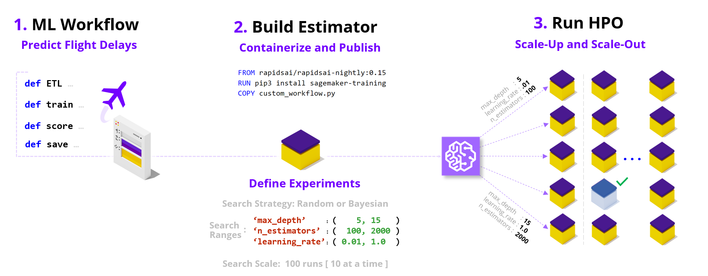
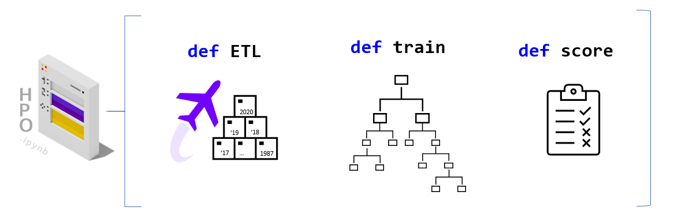
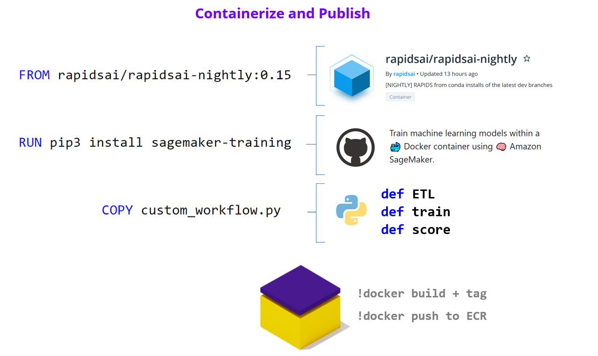
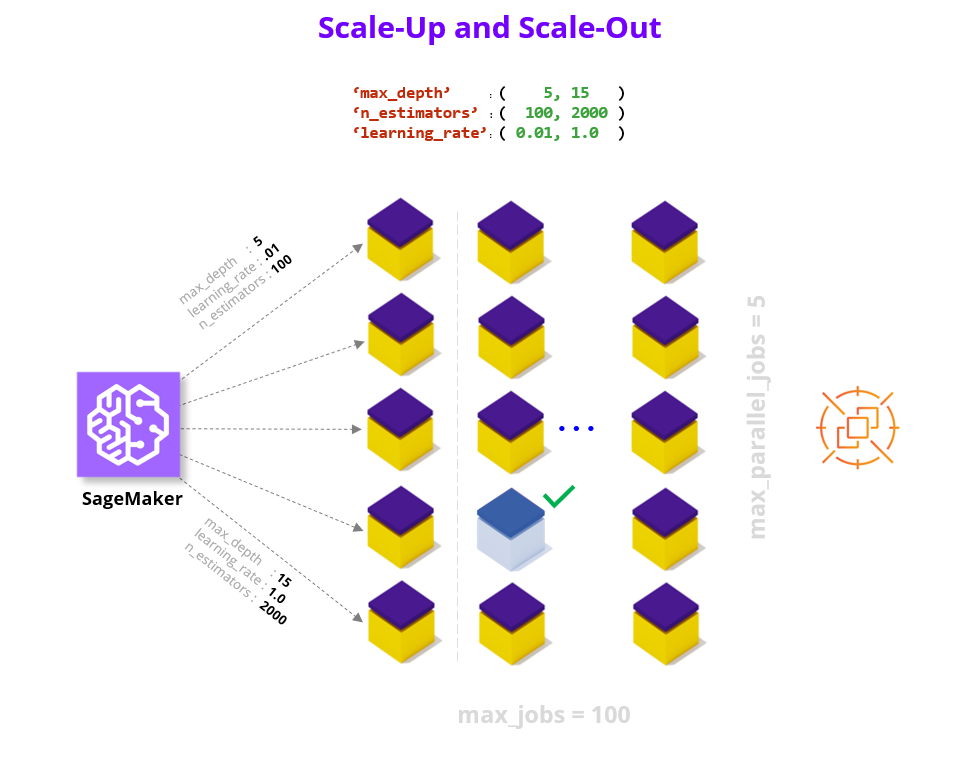
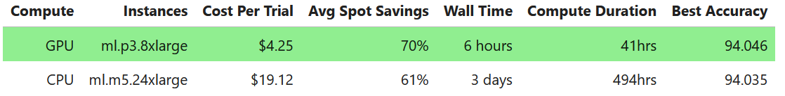

Deep Dive into running Hyper Parameter Optimization on AWS SageMaker#
Hyper Parameter Optimization (HPO) improves model quality by searching over hyperparameters, parameters not typically learned during the training process but rather values that control the learning process itself (e.g., model size/capacity). This search can significantly boost model quality relative to default settings and non-expert tuning; however, HPO can take a very long time on a non-accelerated platform. In this notebook, we containerize a RAPIDS workflow and run Bring-Your-Own-Container SageMaker HPO to show how we can overcome the computational complexity of model search.
We accelerate HPO in two key ways:
by scaling within a node (e.g., multi-GPU where each GPU brings a magnitude higher core count relative to CPUs), and
by scaling across nodes and running parallel trials on cloud instances.
By combining these two powers HPO experiments that feel unapproachable and may take multiple days on CPU instances can complete in just hours. For example, we find a 12x speedup in wall clock time (6 hours vs 3+ days) and a 4.5x reduction in cost when comparing between GPU and CPU EC2 Spot instances on 100 XGBoost HPO trials using 10 parallel workers on 10 years of the Airline Dataset (~63M flights) hosted in a S3 bucket. For additional details refer to the end of the notebook.
With all these powerful tools at our disposal, every data scientist should feel empowered to up-level their model before serving it to the world!
Preamble#
To get things rolling let’s make sure we can query our AWS SageMaker execution role and session as well as our account ID and AWS region.
!docker images
REPOSITORY TAG IMAGE ID CREATED SIZE
%pip install --upgrade boto3
Looking in indexes: https://pypi.org/simple, https://pip.repos.neuron.amazonaws.com
Requirement already satisfied: boto3 in /home/ec2-user/anaconda3/envs/python3/lib/python3.10/site-packages (1.26.54)
Requirement already satisfied: s3transfer<0.7.0,>=0.6.0 in /home/ec2-user/anaconda3/envs/python3/lib/python3.10/site-packages (from boto3) (0.6.0)
Requirement already satisfied: botocore<1.30.0,>=1.29.54 in /home/ec2-user/anaconda3/envs/python3/lib/python3.10/site-packages (from boto3) (1.29.54)
Requirement already satisfied: jmespath<2.0.0,>=0.7.1 in /home/ec2-user/anaconda3/envs/python3/lib/python3.10/site-packages (from boto3) (1.0.1)
Requirement already satisfied: urllib3<1.27,>=1.25.4 in /home/ec2-user/anaconda3/envs/python3/lib/python3.10/site-packages (from botocore<1.30.0,>=1.29.54->boto3) (1.26.8)
Requirement already satisfied: python-dateutil<3.0.0,>=2.1 in /home/ec2-user/anaconda3/envs/python3/lib/python3.10/site-packages (from botocore<1.30.0,>=1.29.54->boto3) (2.8.2)
Requirement already satisfied: six>=1.5 in /home/ec2-user/anaconda3/envs/python3/lib/python3.10/site-packages (from python-dateutil<3.0.0,>=2.1->botocore<1.30.0,>=1.29.54->boto3) (1.16.0)
Note: you may need to restart the kernel to use updated packages.
import sagemaker
from helper_functions import *
execution_role = sagemaker.get_execution_role()
session = sagemaker.Session()
account = !(aws sts get-caller-identity --query Account --output text)
region = !(aws configure get region)
account, region
(['561241433344'], ['us-west-2'])
Key Choices#
Let’s go ahead and choose the configuration options for our HPO run.
Below are two reference configurations showing a small and a large scale HPO (sized in terms of total experiments/compute).
The default values in the notebook are set for the small HPO configuration, however you are welcome to scale them up.
small HPO: 1_year, XGBoost, 3 CV folds, singleGPU, max_jobs = 10, max_parallel_jobs = 2
large HPO: 10_year, XGBoost, 10 CV folds, multiGPU, max_jobs = 100, max_parallel_jobs = 10
Dataset#
We offer free hosting for several demo datasets that you can try running HPO with, or alternatively you can bring your own dataset (BYOD).
By default we leverage the Airline dataset, which is a large public tracker of US domestic flight logs which we offer in various sizes (1 year, 3 year, and 10 year) and in Parquet (compressed column storage) format. The machine learning objective with this dataset is to predict whether flights will be more than 15 minutes late arriving to their destination (dataset link, additional details in Section 1.1).
As an alternative we also offer the NYC Taxi dataset which captures yellow cab trip details in Ney York in January 2020, stored in CSV format without any compression. The machine learning objective with this dataset is to predict whether a trip had an above average tip (>$2.20).
We host the demo datasets in public S3 demo buckets in both the us-east-1 (N. Virginia) or us-west-2 (Oregon) regions (i.e., sagemaker-rapids-hpo-us-east-1, and sagemaker-rapids-hpo-us-west-2). You should run the SageMaker HPO workflow in either of these two regions if you wish to leverage the demo datasets since SageMaker requires that the S3 dataset and the compute you’ll be renting are co-located.
Lastly, if you plan to use your own dataset refer to the BYOD checklist in the Appendix to help integrate into the workflow.
dataset |
data_bucket |
dataset_directory |
# samples |
storage type |
time span |
|---|---|---|---|---|---|
Airline Stats Small |
demo |
1_year |
6.3M |
Parquet |
2019 |
Airline Stats Medium |
demo |
3_year |
18M |
Parquet |
2019-2017 |
Airline Stats Large |
demo |
10_year |
63M |
Parquet |
2019-2010 |
NYC Taxi |
demo |
NYC_taxi |
6.3M |
CSV |
2020 January |
Bring Your Own Dataset |
custom |
custom |
custom |
Parquet/CSV |
custom |
# please choose dataset S3 bucket and directory
data_bucket = "sagemaker-rapids-hpo-" + region[0]
dataset_directory = "10_year" # '1_year', '3_year', '10_year', 'NYC_taxi'
# please choose output bucket for trained model(s)
model_output_bucket = session.default_bucket()
s3_data_input = f"s3://{data_bucket}/{dataset_directory}"
s3_model_output = f"s3://{model_output_bucket}/trained-models"
best_hpo_model_local_save_directory = os.getcwd()
Algorithm#
From a ML/algorithm perspective, we offer XGBoost, RandomForest and KMeans. You are free to switch between these algorithm choices and everything in the example will continue to work.
# please choose learning algorithm
algorithm_choice = "XGBoost"
assert algorithm_choice in ["XGBoost", "RandomForest", "KMeans"]
We can also optionally increase robustness via reshuffles of the train-test split (i.e., cross-validation folds). Typical values here are between 3 and 10 folds.
# please choose cross-validation folds
cv_folds = 10
assert cv_folds >= 1
ML Workflow Compute Choice#
We enable the option of running different code variations that unlock increasing amounts of parallelism in the compute workflow.
All of these code paths are available in the /workflows directory for your reference.
**Note that the single-CPU option will leverage multiple cores in the model training portion of the workflow; however, to unlock full parallelism in each stage of the workflow we use Dask.
# please choose code variant
ml_workflow_choice = "multiGPU"
assert ml_workflow_choice in ["singleCPU", "singleGPU", "multiCPU", "multiGPU"]
Search Ranges and Strategy#
One of the most important choices when running HPO is to choose the bounds of the hyperparameter search process. Below we’ve set the ranges of the hyperparameters to allow for interesting variation, you are of course welcome to revise these ranges based on domain knowledge especially if you plan to plug in your own dataset.
Note that we support additional algorithm specific parameters (refer to the
parse_hyper_parameter_inputsfunction inHPOConfig.py), but for demo purposes have limited our choice to the three parameters that overlap between the XGBoost and RandomForest algorithms. For more details see the documentation for XGBoost parameters and RandomForest parameters. Since KMeans uses different parameters, we adjust accordingly.
# please choose HPO search ranges
hyperparameter_ranges = {
"max_depth": sagemaker.parameter.IntegerParameter(5, 15),
"n_estimators": sagemaker.parameter.IntegerParameter(100, 500),
"max_features": sagemaker.parameter.ContinuousParameter(0.1, 1.0),
} # see note above for adding additional parameters
if "XGBoost" in algorithm_choice:
# number of trees parameter name difference b/w XGBoost and RandomForest
hyperparameter_ranges["num_boost_round"] = hyperparameter_ranges.pop("n_estimators")
if "KMeans" in algorithm_choice:
hyperparameter_ranges = {
"n_clusters": sagemaker.parameter.IntegerParameter(2, 20),
"max_iter": sagemaker.parameter.IntegerParameter(100, 500),
}
We can also choose between a Random and Bayesian search strategy for picking parameter combinations.
Random Search: Choose a random combination of values from within the ranges for each training job it launches. The choice of hyperparameters doesn’t depend on previous results so you can run the maximum number of concurrent workers without affecting the performance of the search.
Bayesian Search: Make a guess about which hyperparameter combinations are likely to get the best results. After testing the first set of hyperparameter values, hyperparameter tuning uses regression to choose the next set of hyperparameter values to test.
# please choose HPO search strategy
search_strategy = "Random"
assert search_strategy in ["Random", "Bayesian"]
Experiment Scale#
We also need to decide how may total experiments to run, and how many should run in parallel. Below we have a very conservative number of maximum jobs to run so that you don’t accidently spawn large computations when starting out, however for meaningful HPO searches this number should be much higher (e.g., in our experiments we often run 100 max_jobs). Note that you may need to request a quota limit increase for additional max_parallel_jobs parallel workers.
# please choose total number of HPO experiments[ we have set this number very low to allow for automated CI testing ]
max_jobs = 100
# please choose number of experiments that can run in parallel
max_parallel_jobs = 10
Let’s also set the max duration for an individual job to 24 hours so we don’t have run-away compute jobs taking too long.
max_duration_of_experiment_seconds = 60 * 60 * 24
Compute Platform#
Based on the dataset size and compute choice we will try to recommend an instance choice*, you are of course welcome to select alternate configurations.
e.g., For the 10_year dataset option, we suggest ml.p3.8xlarge instances (4 GPUs) and ml.m5.24xlarge CPU instances ( we will need upwards of 200GB CPU RAM during model training).
# we will recommend a compute instance type, feel free to modify
instance_type = recommend_instance_type(ml_workflow_choice, dataset_directory)
recommended instance type : ml.p3.8xlarge
instance details : 4x GPUs [ V100 ], 64GB GPU memory, 244GB CPU memory
In addition to choosing our instance type, we can also enable significant savings by leveraging AWS EC2 Spot Instances.
We highly recommend that you set this flag to True as it typically leads to 60-70% cost savings. Note, however that you may need to request a quota limit increase to enable Spot instances in SageMaker.
# please choose whether spot instances should be used
use_spot_instances_flag = True
Validate#
summarize_choices(
s3_data_input,
s3_model_output,
ml_workflow_choice,
algorithm_choice,
cv_folds,
instance_type,
use_spot_instances_flag,
search_strategy,
max_jobs,
max_parallel_jobs,
max_duration_of_experiment_seconds,
)
s3 data input = s3://sagemaker-rapids-hpo-us-west-2/10_year
s3 model output = s3://sagemaker-us-west-2-561241433344/trained-models
compute = multiGPU
algorithm = XGBoost, 10 cv-fold
instance = ml.p3.8xlarge
spot instances = True
hpo strategy = Random
max_experiments = 100
max_parallel = 10
max runtime = 86400 sec
1. ML Workflow
Dataset#
The default settings for this demo are built to utilize the Airline dataset (Carrier On-Time Performance 1987-2020, available from the Bureau of Transportation Statistics). Below are some additional details about this dataset, we plan to offer a companion notebook that does a deep dive on the data science behind this dataset. Note that if you are using an alternate dataset (e.g., NYC Taxi or BYOData) these details are not relevant.
The public dataset contains logs/features about flights in the United States (17 airlines) including:
Locations and distance (
Origin,Dest,Distance)Airline / carrier (
Reporting_Airline)Scheduled departure and arrival times (
CRSDepTimeandCRSArrTime)Actual departure and arrival times (
DpTimeandArrTime)Difference between scheduled & actual times (
ArrDelayandDepDelay)Binary encoded version of late, aka our target variable (
ArrDelay15)
Using these features we will build a classifier model to predict whether a flight is going to be more than 15 minutes late on arrival as it prepares to depart.
Python ML Workflow#
To build a RAPIDS enabled SageMaker HPO we first need to build a SageMaker Estimator. An Estimator is a container image that captures all the software needed to run an HPO experiment. The container is augmented with entrypoint code that will be trggered at runtime by each worker. The entrypoint code enables us to write custom models and hook them up to data.
In order to work with SageMaker HPO, the entrypoint logic should parse hyperparameters (supplied by AWS SageMaker), load and split data, build and train a model, score/evaluate the trained model, and emit an output representing the final score for the given hyperparameter setting. We’ve already built multiple variations of this code.
If you would like to make changes by adding your custom model logic feel free to modify the train.py and/or the specific workflow files in the workflows directory. You are also welcome to uncomment the cells below to load the read/review the code.
First, let’s switch our working directory to the location of the Estimator entrypoint and library code.
# %load train.py
# %load workflows/MLWorkflowSingleGPU.py
Build Estimator#
As we’ve already mentioned, the SageMaker Estimator represents the containerized software stack that AWS SageMaker will replicate to each worker node.
The first step to building our Estimator, is to augment a RAPIDS container with our ML Workflow code from above, and push this image to Amazon Elastic Cloud Registry so it is available to SageMaker.
Containerize and Push to ECR#
Now let’s turn to building our container so that it can integrate with the AWS SageMaker HPO API.
Our container can either be built on top of the latest RAPIDS [ nightly ] image as a starting layer or the RAPIDS stable image.
rapids_base_container = "rapidsai/rapidsai-core-nightly:23.04-cuda11.5-runtime-ubuntu20.04-py3.10"
Let’s also decide on the full name of our container.
image_base = "rapids-sagemaker-mnmg-100"
image_tag = rapids_base_container.split(":")[1]
ecr_fullname = (
f"{account[0]}.dkr.ecr.{region[0]}.amazonaws.com/{image_base}:{image_tag}"
)
ecr_fullname
'561241433344.dkr.ecr.us-west-2.amazonaws.com/rapids-sagemaker-mnmg-100:22.12-cuda11.5-runtime-ubuntu18.04-py3.9'
Write Dockerfile#
We write out the Dockerfile to disk, and in a few cells execute the docker build command.
Let’s now write our selected RAPDIS image layer as the first FROM statement in the the Dockerfile.
with open("Dockerfile", "w") as dockerfile:
dockerfile.writelines(
f"FROM {rapids_base_container} \n\n"
f'ENV AWS_DATASET_DIRECTORY="{dataset_directory}"\n'
f'ENV AWS_ALGORITHM_CHOICE="{algorithm_choice}"\n'
f'ENV AWS_ML_WORKFLOW_CHOICE="{ml_workflow_choice}"\n'
f'ENV AWS_CV_FOLDS="{cv_folds}"\n'
)
Next let’s append write the remaining pieces of the Dockerfile, namely adding the sagemaker-training-toolkit, flask, dask-ml, and copying our python code.
%%writefile -a Dockerfile
# ensure printed output/log-messages retain correct order
ENV PYTHONUNBUFFERED=True
# add sagemaker-training-toolkit [ requires build tools ], flask [ serving ], and dask-ml
RUN apt-get update && apt-get install -y --no-install-recommends build-essential \
&& source activate rapids \
&& pip3 install sagemaker-training cupy-cuda115 flask dask-ml \
&& pip3 install --upgrade protobuf
# path where SageMaker looks for code when container runs in the cloud
ENV CLOUD_PATH="/opt/ml/code"
# copy our latest [local] code into the container
COPY . $CLOUD_PATH
# make the entrypoint script executable
RUN chmod +x $CLOUD_PATH/entrypoint.sh
WORKDIR $CLOUD_PATH
ENTRYPOINT ["./entrypoint.sh"]
Appending to Dockerfile
Lastly, let’s ensure that our Dockerfile correctly captured our base image selection.
validate_dockerfile(rapids_base_container)
!cat Dockerfile
Build and Tag#
The build step will be dominated by the download of the RAPIDS image (base layer). If it’s already been downloaded the build will take less than 1 minute.
!docker pull $rapids_base_container
22.12-cuda11.5-runtime-ubuntu18.04-py3.9: Pulling from rapidsai/rapidsai-core
e5416296: Pulling fs layer
2d3ed59c: Pulling fs layer
1b38369f: Pulling fs layer
4c8e4d7e: Pulling fs layer
a06239d6: Pulling fs layer
cb87b249: Pulling fs layer
61c55367: Pulling fs layer
fb9847e6: Pulling fs layer
0cc4d9ef: Pulling fs layer
Digest: sha256:959a2e80642e881ef99705473d95165cda8383543cff4ae5ca554da782021e47KExtracting 2.96GB/3.932GB
Status: Downloaded newer image for rapidsai/rapidsai-core:22.12-cuda11.5-runtime-ubuntu18.04-py3.9
docker.io/rapidsai/rapidsai-core:22.12-cuda11.5-runtime-ubuntu18.04-py3.9
!docker images
REPOSITORY TAG IMAGE ID CREATED SIZE
rapidsai/rapidsai-core 22.12-cuda11.5-runtime-ubuntu18.04-py3.9 9de590bd08c5 5 weeks ago 13.1GB
%%time !docker build -t $ecr_fullname --build-arg RAPIDS_IMAGE=rapidsai/rapidsai-core-nightly:23.04-cuda11.5-runtime-ubuntu20.04-py3.10 .
Sending build context to Docker daemon 90.62kB
Step 1/12 : FROM rapidsai/rapidsai-core:22.12-cuda11.5-runtime-ubuntu18.04-py3.9
---> 9de590bd08c5
Step 2/12 : ENV AWS_DATASET_DIRECTORY="10_year"
---> Running in 4b7c02990c9d
Removing intermediate container 4b7c02990c9d
---> 967f657cfc72
Step 3/12 : ENV AWS_ALGORITHM_CHOICE="XGBoost"
---> Running in d6dbf287ed0f
Removing intermediate container d6dbf287ed0f
---> 114a69f1a302
Step 4/12 : ENV AWS_ML_WORKFLOW_CHOICE="multiGPU"
---> Running in bfe707fe38f9
Removing intermediate container bfe707fe38f9
---> 00c743a5a456
Step 5/12 : ENV AWS_CV_FOLDS="10"
---> Running in bb2a2f2a1a7e
Removing intermediate container bb2a2f2a1a7e
---> ce9a5ab0fb1e
Step 6/12 : ENV PYTHONUNBUFFERED=True
---> Running in d396568a5cab
Removing intermediate container d396568a5cab
---> 1c75cb5d8dee
Step 7/12 : RUN apt-get update && apt-get install -y --no-install-recommends build-essential && source activate rapids && pip3 install sagemaker-training cupy-cuda115 flask dask-ml && pip3 install --upgrade protobuf
---> Running in 26458c19e436
Get:1 https://developer.download.nvidia.com/compute/cuda/repos/ubuntu1804/x86_64 InRelease [1581 B]
Get:2 https://developer.download.nvidia.com/compute/cuda/repos/ubuntu1804/x86_64 Packages [1082 kB]
Get:3 http://security.ubuntu.com/ubuntu bionic-security InRelease [88.7 kB]
Get:4 http://archive.ubuntu.com/ubuntu bionic InRelease [242 kB]
Get:5 http://security.ubuntu.com/ubuntu bionic-security/multiverse amd64 Packages [22.9 kB]
Get:6 http://security.ubuntu.com/ubuntu bionic-security/main amd64 Packages [3155 kB]
Get:7 http://archive.ubuntu.com/ubuntu bionic-updates InRelease [88.7 kB]
Get:8 http://security.ubuntu.com/ubuntu bionic-security/universe amd64 Packages [1576 kB]
Get:9 http://archive.ubuntu.com/ubuntu bionic-backports InRelease [83.3 kB]
Get:10 http://security.ubuntu.com/ubuntu bionic-security/restricted amd64 Packages [1387 kB]
Get:11 http://archive.ubuntu.com/ubuntu bionic/main amd64 Packages [1344 kB]
Get:12 http://archive.ubuntu.com/ubuntu bionic/restricted amd64 Packages [13.5 kB]
Get:13 http://archive.ubuntu.com/ubuntu bionic/universe amd64 Packages [11.3 MB]
Get:14 http://archive.ubuntu.com/ubuntu bionic/multiverse amd64 Packages [186 kB]
Get:15 http://archive.ubuntu.com/ubuntu bionic-updates/restricted amd64 Packages [1427 kB]
Get:16 http://archive.ubuntu.com/ubuntu bionic-updates/universe amd64 Packages [2352 kB]
Get:17 http://archive.ubuntu.com/ubuntu bionic-updates/multiverse amd64 Packages [30.8 kB]
Get:18 http://archive.ubuntu.com/ubuntu bionic-updates/main amd64 Packages [3577 kB]
Get:19 http://archive.ubuntu.com/ubuntu bionic-backports/universe amd64 Packages [20.5 kB]
Get:20 http://archive.ubuntu.com/ubuntu bionic-backports/main amd64 Packages [64.0 kB]
Fetched 28.1 MB in 5s (5558 kB/s)
Reading package lists...
Reading package lists...
Building dependency tree...
Reading state information...
The following additional packages will be installed:
binutils binutils-common binutils-x86-64-linux-gnu cpp cpp-7 dpkg-dev g++
g++-7 gcc gcc-7 gcc-7-base libasan4 libatomic1 libbinutils libcc1-0
libcilkrts5 libdpkg-perl libgcc-7-dev libgomp1 libisl19 libitm1 liblsan0
libmpc3 libmpfr6 libmpx2 libquadmath0 libstdc++-7-dev libtsan0 libubsan0
make xz-utils
Suggested packages:
binutils-doc cpp-doc gcc-7-locales debian-keyring g++-multilib
g++-7-multilib gcc-7-doc libstdc++6-7-dbg gcc-multilib manpages-dev libtool
flex bison gdb gcc-doc gcc-7-multilib libgcc1-dbg libgomp1-dbg libitm1-dbg
libatomic1-dbg libasan4-dbg liblsan0-dbg libtsan0-dbg libubsan0-dbg
libcilkrts5-dbg libmpx2-dbg libquadmath0-dbg bzr libstdc++-7-doc make-doc
Recommended packages:
fakeroot libalgorithm-merge-perl libfile-fcntllock-perl
liblocale-gettext-perl
The following NEW packages will be installed:
binutils binutils-common binutils-x86-64-linux-gnu build-essential cpp cpp-7
dpkg-dev g++ g++-7 gcc gcc-7 gcc-7-base libasan4 libatomic1 libbinutils
libcc1-0 libcilkrts5 libdpkg-perl libgcc-7-dev libgomp1 libisl19 libitm1
liblsan0 libmpc3 libmpfr6 libmpx2 libquadmath0 libstdc++-7-dev libtsan0
libubsan0 make xz-utils
0 upgraded, 32 newly installed, 0 to remove and 17 not upgraded.
Need to get 37.2 MB of archives.
After this operation, 137 MB of additional disk space will be used.
Get:1 http://archive.ubuntu.com/ubuntu bionic-updates/main amd64 xz-utils amd64 5.2.2-1.3ubuntu0.1 [83.8 kB]
Get:2 http://archive.ubuntu.com/ubuntu bionic-updates/main amd64 binutils-common amd64 2.30-21ubuntu1~18.04.8 [197 kB]
Get:3 http://archive.ubuntu.com/ubuntu bionic-updates/main amd64 libbinutils amd64 2.30-21ubuntu1~18.04.8 [488 kB]
Get:4 http://archive.ubuntu.com/ubuntu bionic-updates/main amd64 binutils-x86-64-linux-gnu amd64 2.30-21ubuntu1~18.04.8 [1839 kB]
Get:5 http://archive.ubuntu.com/ubuntu bionic-updates/main amd64 binutils amd64 2.30-21ubuntu1~18.04.8 [3388 B]
Get:6 http://archive.ubuntu.com/ubuntu bionic-updates/main amd64 gcc-7-base amd64 7.5.0-3ubuntu1~18.04 [18.3 kB]
Get:7 http://archive.ubuntu.com/ubuntu bionic/main amd64 libisl19 amd64 0.19-1 [551 kB]
Get:8 http://archive.ubuntu.com/ubuntu bionic/main amd64 libmpfr6 amd64 4.0.1-1 [243 kB]
Get:9 http://archive.ubuntu.com/ubuntu bionic/main amd64 libmpc3 amd64 1.1.0-1 [40.8 kB]
Get:10 http://archive.ubuntu.com/ubuntu bionic-updates/main amd64 cpp-7 amd64 7.5.0-3ubuntu1~18.04 [8591 kB]
Get:11 http://archive.ubuntu.com/ubuntu bionic-updates/main amd64 cpp amd64 4:7.4.0-1ubuntu2.3 [27.7 kB]
Get:12 http://archive.ubuntu.com/ubuntu bionic-updates/main amd64 libcc1-0 amd64 8.4.0-1ubuntu1~18.04 [39.4 kB]
Get:13 http://archive.ubuntu.com/ubuntu bionic-updates/main amd64 libgomp1 amd64 8.4.0-1ubuntu1~18.04 [76.5 kB]
Get:14 http://archive.ubuntu.com/ubuntu bionic-updates/main amd64 libitm1 amd64 8.4.0-1ubuntu1~18.04 [27.9 kB]
Get:15 http://archive.ubuntu.com/ubuntu bionic-updates/main amd64 libatomic1 amd64 8.4.0-1ubuntu1~18.04 [9192 B]
Get:16 http://archive.ubuntu.com/ubuntu bionic-updates/main amd64 libasan4 amd64 7.5.0-3ubuntu1~18.04 [358 kB]
Get:17 http://archive.ubuntu.com/ubuntu bionic-updates/main amd64 liblsan0 amd64 8.4.0-1ubuntu1~18.04 [133 kB]
Get:18 http://archive.ubuntu.com/ubuntu bionic-updates/main amd64 libtsan0 amd64 8.4.0-1ubuntu1~18.04 [288 kB]
Get:19 http://archive.ubuntu.com/ubuntu bionic-updates/main amd64 libubsan0 amd64 7.5.0-3ubuntu1~18.04 [126 kB]
Get:20 http://archive.ubuntu.com/ubuntu bionic-updates/main amd64 libcilkrts5 amd64 7.5.0-3ubuntu1~18.04 [42.5 kB]
Get:21 http://archive.ubuntu.com/ubuntu bionic-updates/main amd64 libmpx2 amd64 8.4.0-1ubuntu1~18.04 [11.6 kB]
Get:22 http://archive.ubuntu.com/ubuntu bionic-updates/main amd64 libquadmath0 amd64 8.4.0-1ubuntu1~18.04 [134 kB]
Get:23 http://archive.ubuntu.com/ubuntu bionic-updates/main amd64 libgcc-7-dev amd64 7.5.0-3ubuntu1~18.04 [2378 kB]
Get:24 http://archive.ubuntu.com/ubuntu bionic-updates/main amd64 gcc-7 amd64 7.5.0-3ubuntu1~18.04 [9381 kB]
Get:25 http://archive.ubuntu.com/ubuntu bionic-updates/main amd64 gcc amd64 4:7.4.0-1ubuntu2.3 [5184 B]
Get:26 http://archive.ubuntu.com/ubuntu bionic-updates/main amd64 libstdc++-7-dev amd64 7.5.0-3ubuntu1~18.04 [1471 kB]
Get:27 http://archive.ubuntu.com/ubuntu bionic-updates/main amd64 g++-7 amd64 7.5.0-3ubuntu1~18.04 [9697 kB]
Get:28 http://archive.ubuntu.com/ubuntu bionic-updates/main amd64 g++ amd64 4:7.4.0-1ubuntu2.3 [1568 B]
Get:29 http://archive.ubuntu.com/ubuntu bionic/main amd64 make amd64 4.1-9.1ubuntu1 [154 kB]
Get:30 http://archive.ubuntu.com/ubuntu bionic-updates/main amd64 libdpkg-perl all 1.19.0.5ubuntu2.4 [212 kB]
Get:31 http://archive.ubuntu.com/ubuntu bionic-updates/main amd64 dpkg-dev all 1.19.0.5ubuntu2.4 [607 kB]
Get:32 http://archive.ubuntu.com/ubuntu bionic/main amd64 build-essential amd64 12.4ubuntu1 [4758 B]
debconf: delaying package configuration, since apt-utils is not installed
Fetched 37.2 MB in 2s (16.6 MB/s)
Selecting previously unselected package xz-utils.
(Reading database ... 13756 files and directories currently installed.)
Preparing to unpack .../00-xz-utils_5.2.2-1.3ubuntu0.1_amd64.deb ...
Unpacking xz-utils (5.2.2-1.3ubuntu0.1) ...
Selecting previously unselected package binutils-common:amd64.
Preparing to unpack .../01-binutils-common_2.30-21ubuntu1~18.04.8_amd64.deb ...
Unpacking binutils-common:amd64 (2.30-21ubuntu1~18.04.8) ...
Selecting previously unselected package libbinutils:amd64.
Preparing to unpack .../02-libbinutils_2.30-21ubuntu1~18.04.8_amd64.deb ...
Unpacking libbinutils:amd64 (2.30-21ubuntu1~18.04.8) ...
Selecting previously unselected package binutils-x86-64-linux-gnu.
Preparing to unpack .../03-binutils-x86-64-linux-gnu_2.30-21ubuntu1~18.04.8_amd64.deb ...
Unpacking binutils-x86-64-linux-gnu (2.30-21ubuntu1~18.04.8) ...
Selecting previously unselected package binutils.
Preparing to unpack .../04-binutils_2.30-21ubuntu1~18.04.8_amd64.deb ...
Unpacking binutils (2.30-21ubuntu1~18.04.8) ...
Selecting previously unselected package gcc-7-base:amd64.
Preparing to unpack .../05-gcc-7-base_7.5.0-3ubuntu1~18.04_amd64.deb ...
Unpacking gcc-7-base:amd64 (7.5.0-3ubuntu1~18.04) ...
Selecting previously unselected package libisl19:amd64.
Preparing to unpack .../06-libisl19_0.19-1_amd64.deb ...
Unpacking libisl19:amd64 (0.19-1) ...
Selecting previously unselected package libmpfr6:amd64.
Preparing to unpack .../07-libmpfr6_4.0.1-1_amd64.deb ...
Unpacking libmpfr6:amd64 (4.0.1-1) ...
Selecting previously unselected package libmpc3:amd64.
Preparing to unpack .../08-libmpc3_1.1.0-1_amd64.deb ...
Unpacking libmpc3:amd64 (1.1.0-1) ...
Selecting previously unselected package cpp-7.
Preparing to unpack .../09-cpp-7_7.5.0-3ubuntu1~18.04_amd64.deb ...
Unpacking cpp-7 (7.5.0-3ubuntu1~18.04) ...
Selecting previously unselected package cpp.
Preparing to unpack .../10-cpp_4%3a7.4.0-1ubuntu2.3_amd64.deb ...
Unpacking cpp (4:7.4.0-1ubuntu2.3) ...
Selecting previously unselected package libcc1-0:amd64.
Preparing to unpack .../11-libcc1-0_8.4.0-1ubuntu1~18.04_amd64.deb ...
Unpacking libcc1-0:amd64 (8.4.0-1ubuntu1~18.04) ...
Selecting previously unselected package libgomp1:amd64.
Preparing to unpack .../12-libgomp1_8.4.0-1ubuntu1~18.04_amd64.deb ...
Unpacking libgomp1:amd64 (8.4.0-1ubuntu1~18.04) ...
Selecting previously unselected package libitm1:amd64.
Preparing to unpack .../13-libitm1_8.4.0-1ubuntu1~18.04_amd64.deb ...
Unpacking libitm1:amd64 (8.4.0-1ubuntu1~18.04) ...
Selecting previously unselected package libatomic1:amd64.
Preparing to unpack .../14-libatomic1_8.4.0-1ubuntu1~18.04_amd64.deb ...
Unpacking libatomic1:amd64 (8.4.0-1ubuntu1~18.04) ...
Selecting previously unselected package libasan4:amd64.
Preparing to unpack .../15-libasan4_7.5.0-3ubuntu1~18.04_amd64.deb ...
Unpacking libasan4:amd64 (7.5.0-3ubuntu1~18.04) ...
Selecting previously unselected package liblsan0:amd64.
Preparing to unpack .../16-liblsan0_8.4.0-1ubuntu1~18.04_amd64.deb ...
Unpacking liblsan0:amd64 (8.4.0-1ubuntu1~18.04) ...
Selecting previously unselected package libtsan0:amd64.
Preparing to unpack .../17-libtsan0_8.4.0-1ubuntu1~18.04_amd64.deb ...
Unpacking libtsan0:amd64 (8.4.0-1ubuntu1~18.04) ...
Selecting previously unselected package libubsan0:amd64.
Preparing to unpack .../18-libubsan0_7.5.0-3ubuntu1~18.04_amd64.deb ...
Unpacking libubsan0:amd64 (7.5.0-3ubuntu1~18.04) ...
Selecting previously unselected package libcilkrts5:amd64.
Preparing to unpack .../19-libcilkrts5_7.5.0-3ubuntu1~18.04_amd64.deb ...
Unpacking libcilkrts5:amd64 (7.5.0-3ubuntu1~18.04) ...
Selecting previously unselected package libmpx2:amd64.
Preparing to unpack .../20-libmpx2_8.4.0-1ubuntu1~18.04_amd64.deb ...
Unpacking libmpx2:amd64 (8.4.0-1ubuntu1~18.04) ...
Selecting previously unselected package libquadmath0:amd64.
Preparing to unpack .../21-libquadmath0_8.4.0-1ubuntu1~18.04_amd64.deb ...
Unpacking libquadmath0:amd64 (8.4.0-1ubuntu1~18.04) ...
Selecting previously unselected package libgcc-7-dev:amd64.
Preparing to unpack .../22-libgcc-7-dev_7.5.0-3ubuntu1~18.04_amd64.deb ...
Unpacking libgcc-7-dev:amd64 (7.5.0-3ubuntu1~18.04) ...
Selecting previously unselected package gcc-7.
Preparing to unpack .../23-gcc-7_7.5.0-3ubuntu1~18.04_amd64.deb ...
Unpacking gcc-7 (7.5.0-3ubuntu1~18.04) ...
Selecting previously unselected package gcc.
Preparing to unpack .../24-gcc_4%3a7.4.0-1ubuntu2.3_amd64.deb ...
Unpacking gcc (4:7.4.0-1ubuntu2.3) ...
Selecting previously unselected package libstdc++-7-dev:amd64.
Preparing to unpack .../25-libstdc++-7-dev_7.5.0-3ubuntu1~18.04_amd64.deb ...
Unpacking libstdc++-7-dev:amd64 (7.5.0-3ubuntu1~18.04) ...
Selecting previously unselected package g++-7.
Preparing to unpack .../26-g++-7_7.5.0-3ubuntu1~18.04_amd64.deb ...
Unpacking g++-7 (7.5.0-3ubuntu1~18.04) ...
Selecting previously unselected package g++.
Preparing to unpack .../27-g++_4%3a7.4.0-1ubuntu2.3_amd64.deb ...
Unpacking g++ (4:7.4.0-1ubuntu2.3) ...
Selecting previously unselected package make.
Preparing to unpack .../28-make_4.1-9.1ubuntu1_amd64.deb ...
Unpacking make (4.1-9.1ubuntu1) ...
Selecting previously unselected package libdpkg-perl.
Preparing to unpack .../29-libdpkg-perl_1.19.0.5ubuntu2.4_all.deb ...
Unpacking libdpkg-perl (1.19.0.5ubuntu2.4) ...
Selecting previously unselected package dpkg-dev.
Preparing to unpack .../30-dpkg-dev_1.19.0.5ubuntu2.4_all.deb ...
Unpacking dpkg-dev (1.19.0.5ubuntu2.4) ...
Selecting previously unselected package build-essential.
Preparing to unpack .../31-build-essential_12.4ubuntu1_amd64.deb ...
Unpacking build-essential (12.4ubuntu1) ...
Setting up libquadmath0:amd64 (8.4.0-1ubuntu1~18.04) ...
Setting up libgomp1:amd64 (8.4.0-1ubuntu1~18.04) ...
Setting up libatomic1:amd64 (8.4.0-1ubuntu1~18.04) ...
Setting up libcc1-0:amd64 (8.4.0-1ubuntu1~18.04) ...
Setting up make (4.1-9.1ubuntu1) ...
Setting up libtsan0:amd64 (8.4.0-1ubuntu1~18.04) ...
Setting up libmpfr6:amd64 (4.0.1-1) ...
Setting up libdpkg-perl (1.19.0.5ubuntu2.4) ...
Setting up liblsan0:amd64 (8.4.0-1ubuntu1~18.04) ...
Setting up gcc-7-base:amd64 (7.5.0-3ubuntu1~18.04) ...
Setting up binutils-common:amd64 (2.30-21ubuntu1~18.04.8) ...
Setting up libmpx2:amd64 (8.4.0-1ubuntu1~18.04) ...
Setting up xz-utils (5.2.2-1.3ubuntu0.1) ...
update-alternatives: using /usr/bin/xz to provide /usr/bin/lzma (lzma) in auto mode
update-alternatives: warning: skip creation of /usr/share/man/man1/lzma.1.gz because associated file /usr/share/man/man1/xz.1.gz (of link group lzma) doesn't exist
update-alternatives: warning: skip creation of /usr/share/man/man1/unlzma.1.gz because associated file /usr/share/man/man1/unxz.1.gz (of link group lzma) doesn't exist
update-alternatives: warning: skip creation of /usr/share/man/man1/lzcat.1.gz because associated file /usr/share/man/man1/xzcat.1.gz (of link group lzma) doesn't exist
update-alternatives: warning: skip creation of /usr/share/man/man1/lzmore.1.gz because associated file /usr/share/man/man1/xzmore.1.gz (of link group lzma) doesn't exist
update-alternatives: warning: skip creation of /usr/share/man/man1/lzless.1.gz because associated file /usr/share/man/man1/xzless.1.gz (of link group lzma) doesn't exist
update-alternatives: warning: skip creation of /usr/share/man/man1/lzdiff.1.gz because associated file /usr/share/man/man1/xzdiff.1.gz (of link group lzma) doesn't exist
update-alternatives: warning: skip creation of /usr/share/man/man1/lzcmp.1.gz because associated file /usr/share/man/man1/xzcmp.1.gz (of link group lzma) doesn't exist
update-alternatives: warning: skip creation of /usr/share/man/man1/lzgrep.1.gz because associated file /usr/share/man/man1/xzgrep.1.gz (of link group lzma) doesn't exist
update-alternatives: warning: skip creation of /usr/share/man/man1/lzegrep.1.gz because associated file /usr/share/man/man1/xzegrep.1.gz (of link group lzma) doesn't exist
update-alternatives: warning: skip creation of /usr/share/man/man1/lzfgrep.1.gz because associated file /usr/share/man/man1/xzfgrep.1.gz (of link group lzma) doesn't exist
Setting up libmpc3:amd64 (1.1.0-1) ...
Setting up libitm1:amd64 (8.4.0-1ubuntu1~18.04) ...
Setting up libisl19:amd64 (0.19-1) ...
Setting up libasan4:amd64 (7.5.0-3ubuntu1~18.04) ...
Setting up libbinutils:amd64 (2.30-21ubuntu1~18.04.8) ...
Setting up libcilkrts5:amd64 (7.5.0-3ubuntu1~18.04) ...
Setting up libubsan0:amd64 (7.5.0-3ubuntu1~18.04) ...
Setting up libgcc-7-dev:amd64 (7.5.0-3ubuntu1~18.04) ...
Setting up cpp-7 (7.5.0-3ubuntu1~18.04) ...
Setting up libstdc++-7-dev:amd64 (7.5.0-3ubuntu1~18.04) ...
Setting up binutils-x86-64-linux-gnu (2.30-21ubuntu1~18.04.8) ...
Setting up cpp (4:7.4.0-1ubuntu2.3) ...
Setting up binutils (2.30-21ubuntu1~18.04.8) ...
Setting up gcc-7 (7.5.0-3ubuntu1~18.04) ...
Setting up g++-7 (7.5.0-3ubuntu1~18.04) ...
Setting up gcc (4:7.4.0-1ubuntu2.3) ...
Setting up dpkg-dev (1.19.0.5ubuntu2.4) ...
Setting up g++ (4:7.4.0-1ubuntu2.3) ...
update-alternatives: using /usr/bin/g++ to provide /usr/bin/c++ (c++) in auto mode
update-alternatives: warning: skip creation of /usr/share/man/man1/c++.1.gz because associated file /usr/share/man/man1/g++.1.gz (of link group c++) doesn't exist
Setting up build-essential (12.4ubuntu1) ...
Processing triggers for libc-bin (2.27-3ubuntu1.6) ...
Collecting sagemaker-training
Downloading sagemaker_training-4.4.4.tar.gz (58 kB)
━━━━━━━━━━━━━━━━━━━━━━━━━━━━━━━━━━━━━━━━ 58.5/58.5 kB 4.6 MB/s eta 0:00:00
Preparing metadata (setup.py): started
Preparing metadata (setup.py): finished with status 'done'
Collecting cupy-cuda115
Downloading cupy_cuda115-10.6.0-cp39-cp39-manylinux1_x86_64.whl (81.5 MB)
━━━━━━━━━━━━━━━━━━━━━━━━━━━━━━━━━━━━━━━━ 81.5/81.5 MB 23.7 MB/s eta 0:00:00
Collecting flask
Downloading Flask-2.2.2-py3-none-any.whl (101 kB)
━━━━━━━━━━━━━━━━━━━━━━━━━━━━━━━━━━━━━━ 101.5/101.5 kB 25.8 MB/s eta 0:00:00
Requirement already satisfied: dask-ml in /opt/conda/envs/rapids/lib/python3.9/site-packages (1.9.0)
Requirement already satisfied: numpy in /opt/conda/envs/rapids/lib/python3.9/site-packages (from sagemaker-training) (1.23.5)
Collecting boto3
Downloading boto3-1.26.54-py3-none-any.whl (132 kB)
━━━━━━━━━━━━━━━━━━━━━━━━━━━━━━━━━━━━━━ 132.7/132.7 kB 33.7 MB/s eta 0:00:00
Requirement already satisfied: six in /opt/conda/envs/rapids/lib/python3.9/site-packages (from sagemaker-training) (1.16.0)
Requirement already satisfied: pip in /opt/conda/envs/rapids/lib/python3.9/site-packages (from sagemaker-training) (22.3.1)
Collecting retrying>=1.3.3
Downloading retrying-1.3.4-py3-none-any.whl (11 kB)
Collecting gevent
Downloading gevent-22.10.2-cp39-cp39-manylinux_2_17_x86_64.manylinux2014_x86_64.whl (6.4 MB)
━━━━━━━━━━━━━━━━━━━━━━━━━━━━━━━━━━━━━━━━ 6.4/6.4 MB 99.6 MB/s eta 0:00:00
Collecting inotify_simple==1.2.1
Downloading inotify_simple-1.2.1.tar.gz (7.9 kB)
Preparing metadata (setup.py): started
Preparing metadata (setup.py): finished with status 'done'
Collecting werkzeug>=0.15.5
Downloading Werkzeug-2.2.2-py3-none-any.whl (232 kB)
━━━━━━━━━━━━━━━━━━━━━━━━━━━━━━━━━━━━━━━ 232.7/232.7 kB 8.5 MB/s eta 0:00:00
Collecting paramiko>=2.4.2
Downloading paramiko-3.0.0-py3-none-any.whl (210 kB)
━━━━━━━━━━━━━━━━━━━━━━━━━━━━━━━━━━━━━━ 210.8/210.8 kB 47.2 MB/s eta 0:00:00
Requirement already satisfied: psutil>=5.6.7 in /opt/conda/envs/rapids/lib/python3.9/site-packages (from sagemaker-training) (5.9.4)
Requirement already satisfied: protobuf<=3.20.2,>=3.9.2 in /opt/conda/envs/rapids/lib/python3.9/site-packages (from sagemaker-training) (3.20.2)
Requirement already satisfied: scipy>=1.2.2 in /opt/conda/envs/rapids/lib/python3.9/site-packages (from sagemaker-training) (1.6.0)
Requirement already satisfied: fastrlock>=0.5 in /opt/conda/envs/rapids/lib/python3.9/site-packages (from cupy-cuda115) (0.8)
Collecting itsdangerous>=2.0
Downloading itsdangerous-2.1.2-py3-none-any.whl (15 kB)
Requirement already satisfied: importlib-metadata>=3.6.0 in /opt/conda/envs/rapids/lib/python3.9/site-packages (from flask) (5.1.0)
Requirement already satisfied: click>=8.0 in /opt/conda/envs/rapids/lib/python3.9/site-packages (from flask) (8.1.3)
Requirement already satisfied: Jinja2>=3.0 in /opt/conda/envs/rapids/lib/python3.9/site-packages (from flask) (3.1.2)
Requirement already satisfied: distributed>=2.4.0 in /opt/conda/envs/rapids/lib/python3.9/site-packages (from dask-ml) (2022.11.1)
Requirement already satisfied: pandas>=0.24.2 in /opt/conda/envs/rapids/lib/python3.9/site-packages (from dask-ml) (1.5.2)
Requirement already satisfied: dask[array,dataframe]>=2.4.0 in /opt/conda/envs/rapids/lib/python3.9/site-packages (from dask-ml) (2022.11.1+17.g23cbe9a9a)
Requirement already satisfied: multipledispatch>=0.4.9 in /opt/conda/envs/rapids/lib/python3.9/site-packages (from dask-ml) (0.6.0)
Requirement already satisfied: numba>=0.51.0 in /opt/conda/envs/rapids/lib/python3.9/site-packages (from dask-ml) (0.56.4)
Requirement already satisfied: dask-glm>=0.2.0 in /opt/conda/envs/rapids/lib/python3.9/site-packages (from dask-ml) (0.2.0)
Requirement already satisfied: scikit-learn>=0.23 in /opt/conda/envs/rapids/lib/python3.9/site-packages (from dask-ml) (0.24.2)
Requirement already satisfied: packaging in /opt/conda/envs/rapids/lib/python3.9/site-packages (from dask-ml) (22.0)
Requirement already satisfied: cloudpickle>=0.2.2 in /opt/conda/envs/rapids/lib/python3.9/site-packages (from dask-glm>=0.2.0->dask-ml) (2.2.0)
Requirement already satisfied: toolz>=0.8.2 in /opt/conda/envs/rapids/lib/python3.9/site-packages (from dask[array,dataframe]>=2.4.0->dask-ml) (0.12.0)
Requirement already satisfied: fsspec>=0.6.0 in /opt/conda/envs/rapids/lib/python3.9/site-packages (from dask[array,dataframe]>=2.4.0->dask-ml) (2022.11.0)
Requirement already satisfied: pyyaml>=5.3.1 in /opt/conda/envs/rapids/lib/python3.9/site-packages (from dask[array,dataframe]>=2.4.0->dask-ml) (6.0)
Requirement already satisfied: partd>=0.3.10 in /opt/conda/envs/rapids/lib/python3.9/site-packages (from dask[array,dataframe]>=2.4.0->dask-ml) (1.3.0)
Requirement already satisfied: urllib3 in /opt/conda/envs/rapids/lib/python3.9/site-packages (from distributed>=2.4.0->dask-ml) (1.26.13)
Requirement already satisfied: locket>=1.0.0 in /opt/conda/envs/rapids/lib/python3.9/site-packages (from distributed>=2.4.0->dask-ml) (1.0.0)
Requirement already satisfied: tblib>=1.6.0 in /opt/conda/envs/rapids/lib/python3.9/site-packages (from distributed>=2.4.0->dask-ml) (1.7.0)
Requirement already satisfied: msgpack>=0.6.0 in /opt/conda/envs/rapids/lib/python3.9/site-packages (from distributed>=2.4.0->dask-ml) (1.0.4)
Requirement already satisfied: tornado<6.2,>=6.0.3 in /opt/conda/envs/rapids/lib/python3.9/site-packages (from distributed>=2.4.0->dask-ml) (6.1)
Requirement already satisfied: sortedcontainers!=2.0.0,!=2.0.1 in /opt/conda/envs/rapids/lib/python3.9/site-packages (from distributed>=2.4.0->dask-ml) (2.4.0)
Requirement already satisfied: zict>=0.1.3 in /opt/conda/envs/rapids/lib/python3.9/site-packages (from distributed>=2.4.0->dask-ml) (2.2.0)
Requirement already satisfied: zipp>=0.5 in /opt/conda/envs/rapids/lib/python3.9/site-packages (from importlib-metadata>=3.6.0->flask) (3.11.0)
Requirement already satisfied: MarkupSafe>=2.0 in /opt/conda/envs/rapids/lib/python3.9/site-packages (from Jinja2>=3.0->flask) (2.1.1)
Requirement already satisfied: llvmlite<0.40,>=0.39.0dev0 in /opt/conda/envs/rapids/lib/python3.9/site-packages (from numba>=0.51.0->dask-ml) (0.39.1)
Requirement already satisfied: setuptools in /opt/conda/envs/rapids/lib/python3.9/site-packages (from numba>=0.51.0->dask-ml) (65.5.1)
Requirement already satisfied: python-dateutil>=2.8.1 in /opt/conda/envs/rapids/lib/python3.9/site-packages (from pandas>=0.24.2->dask-ml) (2.8.2)
Requirement already satisfied: pytz>=2020.1 in /opt/conda/envs/rapids/lib/python3.9/site-packages (from pandas>=0.24.2->dask-ml) (2022.6)
Requirement already satisfied: cryptography>=3.3 in /opt/conda/envs/rapids/lib/python3.9/site-packages (from paramiko>=2.4.2->sagemaker-training) (38.0.4)
Collecting bcrypt>=3.2
Downloading bcrypt-4.0.1-cp36-abi3-manylinux_2_24_x86_64.whl (593 kB)
━━━━━━━━━━━━━━━━━━━━━━━━━━━━━━━━━━━━━━ 593.2/593.2 kB 80.9 MB/s eta 0:00:00
Collecting pynacl>=1.5
Downloading PyNaCl-1.5.0-cp36-abi3-manylinux_2_17_x86_64.manylinux2014_x86_64.manylinux_2_24_x86_64.whl (856 kB)
━━━━━━━━━━━━━━━━━━━━━━━━━━━━━━━━━━━━━━ 856.7/856.7 kB 74.2 MB/s eta 0:00:00
Requirement already satisfied: joblib>=0.11 in /opt/conda/envs/rapids/lib/python3.9/site-packages (from scikit-learn>=0.23->dask-ml) (1.2.0)
Requirement already satisfied: threadpoolctl>=2.0.0 in /opt/conda/envs/rapids/lib/python3.9/site-packages (from scikit-learn>=0.23->dask-ml) (3.1.0)
Collecting s3transfer<0.7.0,>=0.6.0
Downloading s3transfer-0.6.0-py3-none-any.whl (79 kB)
━━━━━━━━━━━━━━━━━━━━━━━━━━━━━━━━━━━━━━━━ 79.6/79.6 kB 20.7 MB/s eta 0:00:00
Requirement already satisfied: jmespath<2.0.0,>=0.7.1 in /opt/conda/envs/rapids/lib/python3.9/site-packages (from boto3->sagemaker-training) (1.0.1)
Collecting botocore<1.30.0,>=1.29.54
Downloading botocore-1.29.54-py3-none-any.whl (10.3 MB)
━━━━━━━━━━━━━━━━━━━━━━━━━━━━━━━━━━━━━━━━ 10.3/10.3 MB 71.3 MB/s eta 0:00:00
Collecting greenlet>=2.0.0
Downloading greenlet-2.0.1-cp39-cp39-manylinux_2_17_x86_64.manylinux2014_x86_64.whl (535 kB)
━━━━━━━━━━━━━━━━━━━━━━━━━━━━━━━━━━━━━━ 535.9/535.9 kB 18.4 MB/s eta 0:00:00
Collecting zope.event
Downloading zope.event-4.6-py2.py3-none-any.whl (6.8 kB)
Collecting zope.interface
Downloading zope.interface-5.5.2-cp39-cp39-manylinux_2_5_x86_64.manylinux1_x86_64.manylinux_2_12_x86_64.manylinux2010_x86_64.whl (257 kB)
━━━━━━━━━━━━━━━━━━━━━━━━━━━━━━━━━━━━━━ 257.9/257.9 kB 54.6 MB/s eta 0:00:00
Requirement already satisfied: cffi>=1.12 in /opt/conda/envs/rapids/lib/python3.9/site-packages (from cryptography>=3.3->paramiko>=2.4.2->sagemaker-training) (1.15.1)
Requirement already satisfied: heapdict in /opt/conda/envs/rapids/lib/python3.9/site-packages (from zict>=0.1.3->distributed>=2.4.0->dask-ml) (1.0.1)
Requirement already satisfied: pycparser in /opt/conda/envs/rapids/lib/python3.9/site-packages (from cffi>=1.12->cryptography>=3.3->paramiko>=2.4.2->sagemaker-training) (2.21)
Building wheels for collected packages: sagemaker-training, inotify_simple
Building wheel for sagemaker-training (setup.py): started
Building wheel for sagemaker-training (setup.py): finished with status 'done'
Created wheel for sagemaker-training: filename=sagemaker_training-4.4.4-cp39-cp39-linux_x86_64.whl size=77792 sha256=d55794478490aade03aa771de3169132e0495b46201c93474f6a01b0dd52920f
Stored in directory: /root/.cache/pip/wheels/bd/d1/92/a280728ea435ca0905d0adc46e7e1294539cd20c20061e0847
Building wheel for inotify_simple (setup.py): started
Building wheel for inotify_simple (setup.py): finished with status 'done'
Created wheel for inotify_simple: filename=inotify_simple-1.2.1-py3-none-any.whl size=8201 sha256=3827b905d216809ebc6a6938f21634f4878cceab38fa928ac07b89ea7420e0d9
Stored in directory: /root/.cache/pip/wheels/3f/c2/6a/6f6c65836d2fad9ae7008373d82e38b519187113fac6b720c8
Successfully built sagemaker-training inotify_simple
Installing collected packages: inotify_simple, zope.interface, zope.event, werkzeug, retrying, itsdangerous, greenlet, cupy-cuda115, bcrypt, pynacl, gevent, flask, botocore, s3transfer, paramiko, boto3, sagemaker-training
Attempting uninstall: botocore
Found existing installation: botocore 1.27.59
Uninstalling botocore-1.27.59:
Successfully uninstalled botocore-1.27.59
ERROR: pip's dependency resolver does not currently take into account all the packages that are installed. This behaviour is the source of the following dependency conflicts.
aiobotocore 2.4.0 requires botocore<1.27.60,>=1.27.59, but you have botocore 1.29.54 which is incompatible.
Successfully installed bcrypt-4.0.1 boto3-1.26.54 botocore-1.29.54 cupy-cuda115-10.6.0 flask-2.2.2 gevent-22.10.2 greenlet-2.0.1 inotify_simple-1.2.1 itsdangerous-2.1.2 paramiko-3.0.0 pynacl-1.5.0 retrying-1.3.4 s3transfer-0.6.0 sagemaker-training-4.4.4 werkzeug-2.2.2 zope.event-4.6 zope.interface-5.5.2
WARNING: Running pip as the 'root' user can result in broken permissions and conflicting behaviour with the system package manager. It is recommended to use a virtual environment instead: https://pip.pypa.io/warnings/venv
Requirement already satisfied: protobuf in /opt/conda/envs/rapids/lib/python3.9/site-packages (3.20.2)
Collecting protobuf
Downloading protobuf-4.21.12-cp37-abi3-manylinux2014_x86_64.whl (409 kB)
━━━━━━━━━━━━━━━━━━━━━━━━━━━━━━━━━━━━━━ 409.8/409.8 kB 11.6 MB/s eta 0:00:00
Installing collected packages: protobuf
Attempting uninstall: protobuf
Found existing installation: protobuf 3.20.2
Uninstalling protobuf-3.20.2:
Successfully uninstalled protobuf-3.20.2
ERROR: pip's dependency resolver does not currently take into account all the packages that are installed. This behaviour is the source of the following dependency conflicts.
cudf 22.12.1 requires cupy-cuda11x, which is not installed.
sagemaker-training 4.4.4 requires protobuf<=3.20.2,>=3.9.2, but you have protobuf 4.21.12 which is incompatible.
cudf 22.12.1 requires protobuf<3.21.0a0,>=3.20.1, but you have protobuf 4.21.12 which is incompatible.
Successfully installed protobuf-4.21.12
WARNING: Running pip as the 'root' user can result in broken permissions and conflicting behaviour with the system package manager. It is recommended to use a virtual environment instead: https://pip.pypa.io/warnings/venv
Removing intermediate container 26458c19e436
---> c079363fd950
Step 8/12 : ENV CLOUD_PATH="/opt/ml/code"
---> Running in 2a6107db1872
Removing intermediate container 2a6107db1872
---> 544766cb6c2f
Step 9/12 : COPY . $CLOUD_PATH
---> 5601b0026b3d
Step 10/12 : RUN chmod +x $CLOUD_PATH/entrypoint.sh
---> Running in f1540779d7ac
Removing intermediate container f1540779d7ac
---> b0e41515bf61
Step 11/12 : WORKDIR $CLOUD_PATH
---> Running in 1630b5f89848
Removing intermediate container 1630b5f89848
---> ad01ce435ad3
Step 12/12 : ENTRYPOINT ["./entrypoint.sh"]
---> Running in 3e2a828b1833
Removing intermediate container 3e2a828b1833
---> 045f00216761
Successfully built 045f00216761
Successfully tagged 561241433344.dkr.ecr.us-west-2.amazonaws.com/rapids-sagemaker-mnmg-100:22.12-cuda11.5-runtime-ubuntu18.04-py3.9
CPU times: user 687 ms, sys: 99.4 ms, total: 787 ms
Wall time: 45.8 s
!docker images
REPOSITORY TAG IMAGE ID CREATED SIZE
561241433344.dkr.ecr.us-west-2.amazonaws.com/rapids-sagemaker-mnmg-100 22.12-cuda11.5-runtime-ubuntu18.04-py3.9 045f00216761 Less than a second ago 13.7GB
rapidsai/rapidsai-core 22.12-cuda11.5-runtime-ubuntu18.04-py3.9 9de590bd08c5 5 weeks ago 13.1GB
Publish to Elastic Cloud Registry (ECR)#
Now that we’ve built and tagged our container its time to push it to Amazon’s container registry (ECR). Once in ECR, AWS SageMaker will be able to leverage our image to build Estimators and run experiments.
Docker Login to ECR
docker_login_str = !(aws ecr get-login --region {region[0]} --no-include-email)
!{docker_login_str[0]}
WARNING! Using --password via the CLI is insecure. Use --password-stdin.
WARNING! Your password will be stored unencrypted in /home/ec2-user/.docker/config.json.
Configure a credential helper to remove this warning. See
https://docs.docker.com/engine/reference/commandline/login/#credentials-store
Login Succeeded
Create ECR repository [ if it doesn’t already exist]
repository_query = !(aws ecr describe-repositories --repository-names $image_base)
if repository_query[0] == "":
!(aws ecr create-repository --repository-name $image_base)
Let’s now actually push the container to ECR
Note the first push to ECR may take some time (hopefully less than 10 minutes).
!docker push $ecr_fullname
The push refers to repository [561241433344.dkr.ecr.us-west-2.amazonaws.com/rapids-sagemaker-mnmg-100]
36e5943b: Preparing
61737e1c: Preparing
b2094ffc: Preparing
601675bf: Preparing
a211643c: Preparing
51d8b000: Preparing
f7b7f229: Preparing
48598b79: Preparing
2b6403fc: Preparing
ca9f5267: Preparing
e36e26b2: Preparing
2c4843ad: Preparing
2094ffc: Pushed 588.6MB/583.5MB2A22.12-cuda11.5-runtime-ubuntu18.04-py3.9: digest: sha256:1d0c31e38929d70278bc2170206ad74207dd692dc7b4ff125de1d6c924fe0afe size: 3061
Create Estimator#
Having built our container [ +custom logic] and pushed it to ECR, we can finally compile all of efforts into an Estimator instance.
!docker images
REPOSITORY TAG IMAGE ID CREATED SIZE
561241433344.dkr.ecr.us-west-2.amazonaws.com/rapids-sagemaker-mnmg-100 22.12-cuda11.5-runtime-ubuntu18.04-py3.9 045f00216761 About a minute ago 13.7GB
rapidsai/rapidsai-core 22.12-cuda11.5-runtime-ubuntu18.04-py3.9 9de590bd08c5 5 weeks ago 13.1GB
# 'volume_size' - EBS volume size in GB, default = 30
estimator_params = {
"image_uri": ecr_fullname,
"role": execution_role,
"instance_type": instance_type,
"instance_count": 2,
"input_mode": "File",
"output_path": s3_model_output,
"use_spot_instances": use_spot_instances_flag,
"max_run": max_duration_of_experiment_seconds, # 24 hours
"sagemaker_session": session,
}
if use_spot_instances_flag == True:
estimator_params.update({"max_wait": max_duration_of_experiment_seconds + 1})
estimator = sagemaker.estimator.Estimator(**estimator_params)
Test Estimator#
Now we are ready to test by asking SageMaker to run the BYOContainer logic inside our Estimator. This is a useful step if you’ve made changes to your custom logic and are interested in making sure everything works before launching a large HPO search.
Note: This verification step will use the default hyperparameter values declared in our custom train code, as SageMaker HPO will not be orchestrating a search for this single run.
summarize_choices(
s3_data_input,
s3_model_output,
ml_workflow_choice,
algorithm_choice,
cv_folds,
instance_type,
use_spot_instances_flag,
search_strategy,
max_jobs,
max_parallel_jobs,
max_duration_of_experiment_seconds,
)
s3 data input = s3://sagemaker-rapids-hpo-us-west-2/10_year
s3 model output = s3://sagemaker-us-west-2-561241433344/trained-models
compute = multiGPU
algorithm = XGBoost, 10 cv-fold
instance = ml.p3.8xlarge
spot instances = True
hpo strategy = Random
max_experiments = 100
max_parallel = 10
max runtime = 86400 sec
job_name = new_job_name_from_config(
dataset_directory,
region,
ml_workflow_choice,
algorithm_choice,
cv_folds,
instance_type,
)
generated job name : air-mGPU-XGB-10cv-a96aa65a146b7a
estimator.fit(inputs=s3_data_input, job_name=job_name.lower())
INFO:sagemaker:Creating training-job with name: air-mgpu-xgb-10cv-a96aa65a146b7a
2023-01-23 18:33:19 Starting - Starting the training job......
2023-01-23 18:34:13 Starting - Preparing the instances for training............
2023-01-23 18:36:00 Downloading - Downloading input data...
2023-01-23 18:36:31 Training - Downloading the training image.....................
2023-01-23 18:39:52 Training - Training image download completed. Training in progress..@ entrypoint -> launching training script
2023-01-23 18:40:14,715 INFO hpo_log
parsing configuration from environment settings...
2023-01-23 18:40:14,715 INFO hpo_log Dataset: Airline
Compute: multi-GPU
Algorithm: XGBoost
CV_folds: 10
2023-01-23 18:40:14,715 INFO hpo_log parsing model hyperparameters from command line arguments...log
2023-01-23 18:40:14,720 INFO hpo_log { 'gamma': 0.0,
'lambda': 1,
'learning_rate': 0.3,
'max_depth': 5,
'num_boost_round': 10,
'objective': 'binary:logistic',
'random_state': 0,
'seed': 0,
'tree_method': 'gpu_hist',
'verbosity': 0}
2023-01-23 18:40:14,721 INFO hpo_log Parquet input files detected
['/opt/ml/input/data/training/part.20.parquet',
'/opt/ml/input/data/training/part.120.parquet',
'/opt/ml/input/data/training/part.38.parquet',
'/opt/ml/input/data/training/part.83.parquet',
'/opt/ml/input/data/training/part.5.parquet',
'/opt/ml/input/data/training/part.99.parquet',
'/opt/ml/input/data/training/part.10.parquet',
'/opt/ml/input/data/training/part.44.parquet',
'/opt/ml/input/data/training/part.98.parquet',
'/opt/ml/input/data/training/part.12.parquet',
'/opt/ml/input/data/training/part.103.parquet',
'/opt/ml/input/data/training/part.102.parquet',
'/opt/ml/input/data/training/part.41.parquet',
'/opt/ml/input/data/training/part.59.parquet',
'/opt/ml/input/data/training/part.40.parquet',
'/opt/ml/input/data/training/part.42.parquet',
'/opt/ml/input/data/training/part.86.parquet',
'/opt/ml/input/data/training/part.107.parquet',
'/opt/ml/input/data/training/part.6.parquet',
'/opt/ml/input/data/training/part.96.parquet',
'/opt/ml/input/data/training/part.108.parquet',
'/opt/ml/input/data/training/part.119.parquet',
'/opt/ml/input/data/training/part.74.parquet',
'/opt/ml/input/data/training/part.92.parquet',
'/opt/ml/input/data/training/part.9.parquet',
'/opt/ml/input/data/training/part.16.parquet',
'/opt/ml/input/data/training/part.8.parquet',
'/opt/ml/input/data/training/part.91.parquet',
'/opt/ml/input/data/training/part.67.parquet',
'/opt/ml/input/data/training/part.35.parquet',
'/opt/ml/input/data/training/part.46.parquet',
'/opt/ml/input/data/training/part.36.parquet',
'/opt/ml/input/data/training/part.30.parquet',
'/opt/ml/input/data/training/part.22.parquet',
'/opt/ml/input/data/training/part.78.parquet',
'/opt/ml/input/data/training/part.109.parquet',
'/opt/ml/input/data/training/part.66.parquet',
'/opt/ml/input/data/training/part.26.parquet',
'/opt/ml/input/data/training/part.75.parquet',
'/opt/ml/input/data/training/part.89.parquet',
'/opt/ml/input/data/training/part.58.parquet',
'/opt/ml/input/data/training/part.104.parquet',
'/opt/ml/input/data/training/part.13.parquet',
'/opt/ml/input/data/training/part.37.parquet',
'/opt/ml/input/data/training/part.72.parquet',
'/opt/ml/input/data/training/part.116.parquet',
'/opt/ml/input/data/training/part.23.parquet',
2023-01-23 18:40:14,722 INFO hpo_log detected 121 files as input
'/opt/ml/input/data/training/part.68.parquet',
'/opt/ml/input/data/training/part.47.parquet',
'/opt/ml/input/data/training/part.57.parquet',
'/opt/ml/input/data/training/part.97.parquet',
'/opt/ml/input/data/training/part.4.parquet',
'/opt/ml/input/data/training/part.85.parquet',
'/opt/ml/input/data/training/part.110.parquet',
'/opt/ml/input/data/training/part.73.parquet',
'/opt/ml/input/data/training/part.53.parquet',
'/opt/ml/input/data/training/part.63.parquet',
'/opt/ml/input/data/training/part.25.parquet',
'/opt/ml/input/data/training/part.15.parquet',
'/opt/ml/input/data/training/part.19.parquet',
'/opt/ml/input/data/training/part.87.parquet',
'/opt/ml/input/data/training/part.21.parquet',
'/opt/ml/input/data/training/part.32.parquet',
'/opt/ml/input/data/training/part.29.parquet',
'/opt/ml/input/data/training/part.76.parquet',
'/opt/ml/input/data/training/part.84.parquet',
'/opt/ml/input/data/training/part.115.parquet',
'/opt/ml/input/data/training/part.55.parquet',
'/opt/ml/input/data/training/part.31.parquet',
'/opt/ml/input/data/training/part.11.parquet',
'/opt/ml/input/data/training/part.39.parquet',
'/opt/ml/input/data/training/part.100.parquet',
'/opt/ml/input/data/training/part.64.parquet',
'/opt/ml/input/data/training/part.94.parquet',
'/opt/ml/input/data/training/part.60.parquet',
'/opt/ml/input/data/training/part.93.parquet',
'/opt/ml/input/data/training/part.28.parquet',
'/opt/ml/input/data/training/part.14.parquet',
'/opt/ml/input/data/training/part.80.parquet',
'/opt/ml/input/data/training/part.34.parquet',
'/opt/ml/input/data/training/part.82.parquet',
'/opt/ml/input/data/training/part.48.parquet',
'/opt/ml/input/data/training/part.70.parquet',
'/opt/ml/input/data/training/part.81.parquet',
'/opt/ml/input/data/training/part.65.parquet',
'/opt/ml/input/data/training/part.27.parquet',
'/opt/ml/input/data/training/part.52.parquet',
'/opt/ml/input/data/training/part.0.parquet',
'/opt/ml/input/data/training/part.50.parquet',
'/opt/ml/input/data/training/part.71.parquet',
'/opt/ml/input/data/training/part.118.parquet',
'/opt/ml/input/data/training/part.111.parquet',
'/opt/ml/input/data/training/part.54.parquet',
'/opt/ml/input/data/training/part.77.parquet',
'/opt/ml/input/data/training/part.79.parquet',
'/opt/ml/input/data/training/part.17.parquet',
'/opt/ml/input/data/training/part.101.parquet',
'/opt/ml/input/data/training/part.3.parquet',
'/opt/ml/input/data/training/part.95.parquet',
'/opt/ml/input/data/training/part.56.parquet',
'/opt/ml/input/data/training/part.43.parquet',
'/opt/ml/input/data/training/part.90.parquet',
'/opt/ml/input/data/training/part.33.parquet',
'/opt/ml/input/data/training/part.105.parquet',
'/opt/ml/input/data/training/part.51.parquet',
'/opt/ml/input/data/training/part.45.parquet',
'/opt/ml/input/data/training/part.117.parquet',
'/opt/ml/input/data/training/part.18.parquet',
'/opt/ml/input/data/training/part.62.parquet',
'/opt/ml/input/data/training/part.49.parquet',
'/opt/ml/input/data/training/part.106.parquet',
'/opt/ml/input/data/training/part.2.parquet',
'/opt/ml/input/data/training/part.24.parquet',
'/opt/ml/input/data/training/part.7.parquet',
'/opt/ml/input/data/training/part.88.parquet',
'/opt/ml/input/data/training/part.69.parquet',
'/opt/ml/input/data/training/part.1.parquet',
'/opt/ml/input/data/training/part.113.parquet',
'/opt/ml/input/data/training/part.114.parquet',
'/opt/ml/input/data/training/part.61.parquet',
'/opt/ml/input/data/training/part.112.parquet']
/opt/conda/envs/rapids/lib/python3.9/site-packages/cupy/_environment.py:437: UserWarning:
--------------------------------------------------------------------------------
CuPy may not function correctly because multiple CuPy packages are installed
in your environment:
cupy, cupy-cuda115
Follow these steps to resolve this issue:
1. For all packages listed above, run the following command to remove all
existing CuPy installations:
$ pip uninstall <package_name>
If you previously installed CuPy via conda, also run the following:
$ conda uninstall cupy
2. Install the appropriate CuPy package.
Refer to the Installation Guide for detailed instructions.
https://docs.cupy.dev/en/stable/install.html
--------------------------------------------------------------------------------
warnings.warn(f'''
2023-01-23 18:40:17,980 INFO hpo_log Multi-GPU Workflow
@ entrypoint -> launching training script
2023-01-23 18:40:15,669 INFO hpo_log
parsing configuration from environment settings...
2023-01-23 18:40:15,670 INFO hpo_log Dataset: Airline
Compute: multi-GPU
Algorithm: XGBoost
CV_folds: 10
2023-01-23 18:40:15,670 INFO hpo_log parsing model hyperparameters from command line arguments...log
2023-01-23 18:40:15,675 INFO hpo_log { 'gamma': 0.0,
'lambda': 1,
'learning_rate': 0.3,
'max_depth': 5,
'num_boost_round': 10,
'objective': 'binary:logistic',
'random_state': 0,
'seed': 0,
'tree_method': 'gpu_hist',
'verbosity': 0}
2023-01-23 18:40:15,676 INFO hpo_log Parquet input files detected
['/opt/ml/input/data/training/part.95.parquet',
'/opt/ml/input/data/training/part.40.parquet',
'/opt/ml/input/data/training/part.41.parquet',
'/opt/ml/input/data/training/part.20.parquet',
'/opt/ml/input/data/training/part.29.parquet',
'/opt/ml/input/data/training/part.23.parquet',
'/opt/ml/input/data/training/part.17.parquet',
'/opt/ml/input/data/training/part.83.parquet',
'/opt/ml/input/data/training/part.78.parquet',
'/opt/ml/input/data/training/part.103.parquet',
'/opt/ml/input/data/training/part.70.parquet',
'/opt/ml/input/data/training/part.53.parquet',
'/opt/ml/input/data/training/part.51.parquet',
'/opt/ml/input/data/training/part.66.parquet',
'/opt/ml/input/data/training/part.72.parquet',
'/opt/ml/input/data/training/part.76.parquet',
'/opt/ml/input/data/training/part.31.parquet',
'/opt/ml/input/data/training/part.44.parquet',
'/opt/ml/input/data/training/part.77.parquet',
'/opt/ml/input/data/training/part.47.parquet',
'/opt/ml/input/data/training/part.113.parquet',
'/opt/ml/input/data/training/part.45.parquet',
'/opt/ml/input/data/training/part.3.parquet',
'/opt/ml/input/data/training/part.11.parquet',
'/opt/ml/input/data/training/part.13.parquet',
'/opt/ml/input/data/training/part.111.parquet',
'/opt/ml/input/data/training/part.69.parquet',
'/opt/ml/input/data/training/part.21.parquet',
'/opt/ml/input/data/training/part.114.parquet',
'/opt/ml/input/data/training/part.28.parquet',
'/opt/ml/input/data/training/part.94.parquet',
'/opt/ml/input/data/training/part.73.parquet',
'/opt/ml/input/data/training/part.48.parquet',
'/opt/ml/input/data/training/part.35.parquet',
'/opt/ml/input/data/training/part.16.parquet',
'/opt/ml/input/data/training/part.67.parquet',
'/opt/ml/input/data/training/part.79.parquet',
'/opt/ml/input/data/training/part.25.parquet',
'/opt/ml/input/data/training/part.119.parquet',
'/opt/ml/input/data/training/part.37.parquet',
2023-01-23 18:40:15,677 INFO hpo_log detected 121 files as input
'/opt/ml/input/data/training/part.4.parquet',
'/opt/ml/input/data/training/part.74.parquet',
'/opt/ml/input/data/training/part.68.parquet',
'/opt/ml/input/data/training/part.9.parquet',
'/opt/ml/input/data/training/part.54.parquet',
'/opt/ml/input/data/training/part.39.parquet',
'/opt/ml/input/data/training/part.96.parquet',
'/opt/ml/input/data/training/part.71.parquet',
'/opt/ml/input/data/training/part.7.parquet',
'/opt/ml/input/data/training/part.50.parquet',
'/opt/ml/input/data/training/part.15.parquet',
'/opt/ml/input/data/training/part.104.parquet',
'/opt/ml/input/data/training/part.88.parquet',
'/opt/ml/input/data/training/part.80.parquet',
'/opt/ml/input/data/training/part.12.parquet',
'/opt/ml/input/data/training/part.84.parquet',
'/opt/ml/input/data/training/part.116.parquet',
'/opt/ml/input/data/training/part.19.parquet',
'/opt/ml/input/data/training/part.46.parquet',
'/opt/ml/input/data/training/part.0.parquet',
'/opt/ml/input/data/training/part.61.parquet',
'/opt/ml/input/data/training/part.36.parquet',
'/opt/ml/input/data/training/part.64.parquet',
'/opt/ml/input/data/training/part.102.parquet',
'/opt/ml/input/data/training/part.100.parquet',
'/opt/ml/input/data/training/part.86.parquet',
'/opt/ml/input/data/training/part.89.parquet',
'/opt/ml/input/data/training/part.6.parquet',
'/opt/ml/input/data/training/part.60.parquet',
'/opt/ml/input/data/training/part.120.parquet',
'/opt/ml/input/data/training/part.56.parquet',
'/opt/ml/input/data/training/part.26.parquet',
'/opt/ml/input/data/training/part.99.parquet',
'/opt/ml/input/data/training/part.14.parquet',
'/opt/ml/input/data/training/part.105.parquet',
'/opt/ml/input/data/training/part.106.parquet',
'/opt/ml/input/data/training/part.90.parquet',
'/opt/ml/input/data/training/part.33.parquet',
'/opt/ml/input/data/training/part.43.parquet',
'/opt/ml/input/data/training/part.118.parquet',
'/opt/ml/input/data/training/part.27.parquet',
'/opt/ml/input/data/training/part.65.parquet',
'/opt/ml/input/data/training/part.101.parquet',
'/opt/ml/input/data/training/part.87.parquet',
'/opt/ml/input/data/training/part.107.parquet',
'/opt/ml/input/data/training/part.8.parquet',
'/opt/ml/input/data/training/part.110.parquet',
'/opt/ml/input/data/training/part.49.parquet',
'/opt/ml/input/data/training/part.112.parquet',
'/opt/ml/input/data/training/part.24.parquet',
'/opt/ml/input/data/training/part.115.parquet',
'/opt/ml/input/data/training/part.55.parquet',
'/opt/ml/input/data/training/part.57.parquet',
'/opt/ml/input/data/training/part.98.parquet',
'/opt/ml/input/data/training/part.85.parquet',
'/opt/ml/input/data/training/part.117.parquet',
'/opt/ml/input/data/training/part.52.parquet',
'/opt/ml/input/data/training/part.93.parquet',
'/opt/ml/input/data/training/part.30.parquet',
'/opt/ml/input/data/training/part.82.parquet',
'/opt/ml/input/data/training/part.75.parquet',
'/opt/ml/input/data/training/part.81.parquet',
'/opt/ml/input/data/training/part.97.parquet',
'/opt/ml/input/data/training/part.62.parquet',
'/opt/ml/input/data/training/part.18.parquet',
'/opt/ml/input/data/training/part.22.parquet',
'/opt/ml/input/data/training/part.91.parquet',
'/opt/ml/input/data/training/part.32.parquet',
'/opt/ml/input/data/training/part.92.parquet',
'/opt/ml/input/data/training/part.38.parquet',
'/opt/ml/input/data/training/part.63.parquet',
'/opt/ml/input/data/training/part.2.parquet',
'/opt/ml/input/data/training/part.59.parquet',
'/opt/ml/input/data/training/part.42.parquet',
'/opt/ml/input/data/training/part.34.parquet',
'/opt/ml/input/data/training/part.108.parquet',
'/opt/ml/input/data/training/part.109.parquet',
'/opt/ml/input/data/training/part.1.parquet',
'/opt/ml/input/data/training/part.5.parquet',
'/opt/ml/input/data/training/part.58.parquet',
'/opt/ml/input/data/training/part.10.parquet']
/opt/conda/envs/rapids/lib/python3.9/site-packages/cupy/_environment.py:437: UserWarning:
--------------------------------------------------------------------------------
CuPy may not function correctly because multiple CuPy packages are installed
in your environment:
cupy, cupy-cuda115
Follow these steps to resolve this issue:
1. For all packages listed above, run the following command to remove all
existing CuPy installations:
$ pip uninstall <package_name>
If you previously installed CuPy via conda, also run the following:
$ conda uninstall cupy
2. Install the appropriate CuPy package.
Refer to the Installation Guide for detailed instructions.
https://docs.cupy.dev/en/stable/install.html
--------------------------------------------------------------------------------
warnings.warn(f'''
2023-01-23 18:40:18,987 INFO hpo_log Multi-GPU Workflow
/opt/conda/envs/rapids/lib/python3.9/site-packages/cupy/_environment.py:437: UserWarning:
--------------------------------------------------------------------------------
CuPy may not function correctly because multiple CuPy packages are installed
in your environment:
cupy, cupy-cuda115
Follow these steps to resolve this issue:
1. For all packages listed above, run the following command to remove all
existing CuPy installations:
$ pip uninstall <package_name>
If you previously installed CuPy via conda, also run the following:
$ conda uninstall cupy
2. Install the appropriate CuPy package.
Refer to the Installation Guide for detailed instructions.
https://docs.cupy.dev/en/stable/install.html
--------------------------------------------------------------------------------
warnings.warn(f'''
/opt/conda/envs/rapids/lib/python3.9/site-packages/cupy/_environment.py:437: UserWarning:
--------------------------------------------------------------------------------
CuPy may not function correctly because multiple CuPy packages are installed
in your environment:
cupy, cupy-cuda115
Follow these steps to resolve this issue:
1. For all packages listed above, run the following command to remove all
existing CuPy installations:
$ pip uninstall <package_name>
If you previously installed CuPy via conda, also run the following:
$ conda uninstall cupy
2. Install the appropriate CuPy package.
Refer to the Installation Guide for detailed instructions.
https://docs.cupy.dev/en/stable/install.html
--------------------------------------------------------------------------------
warnings.warn(f'''
/opt/conda/envs/rapids/lib/python3.9/site-packages/cupy/_environment.py:437: UserWarning:
--------------------------------------------------------------------------------
CuPy may not function correctly because multiple CuPy packages are installed
in your environment:
cupy, cupy-cuda115
Follow these steps to resolve this issue:
1. For all packages listed above, run the following command to remove all
existing CuPy installations:
$ pip uninstall <package_name>
If you previously installed CuPy via conda, also run the following:
$ conda uninstall cupy
2. Install the appropriate CuPy package.
Refer to the Installation Guide for detailed instructions.
https://docs.cupy.dev/en/stable/install.html
--------------------------------------------------------------------------------
warnings.warn(f'''
/opt/conda/envs/rapids/lib/python3.9/site-packages/cupy/_environment.py:437: UserWarning:
--------------------------------------------------------------------------------
CuPy may not function correctly because multiple CuPy packages are installed
in your environment:
cupy, cupy-cuda115
Follow these steps to resolve this issue:
1. For all packages listed above, run the following command to remove all
existing CuPy installations:
$ pip uninstall <package_name>
If you previously installed CuPy via conda, also run the following:
$ conda uninstall cupy
2. Install the appropriate CuPy package.
Refer to the Installation Guide for detailed instructions.
https://docs.cupy.dev/en/stable/install.html
--------------------------------------------------------------------------------
warnings.warn(f'''
/opt/conda/envs/rapids/lib/python3.9/site-packages/cupy/_environment.py:437: UserWarning:
--------------------------------------------------------------------------------
CuPy may not function correctly because multiple CuPy packages are installed
in your environment:
cupy, cupy-cuda115
Follow these steps to resolve this issue:
1. For all packages listed above, run the following command to remove all
existing CuPy installations:
$ pip uninstall <package_name>
If you previously installed CuPy via conda, also run the following:
$ conda uninstall cupy
2. Install the appropriate CuPy package.
Refer to the Installation Guide for detailed instructions.
https://docs.cupy.dev/en/stable/install.html
--------------------------------------------------------------------------------
warnings.warn(f'''
/opt/conda/envs/rapids/lib/python3.9/site-packages/cupy/_environment.py:437: UserWarning:
--------------------------------------------------------------------------------
CuPy may not function correctly because multiple CuPy packages are installed
in your environment:
cupy, cupy-cuda115
Follow these steps to resolve this issue:
1. For all packages listed above, run the following command to remove all
existing CuPy installations:
$ pip uninstall <package_name>
If you previously installed CuPy via conda, also run the following:
$ conda uninstall cupy
2. Install the appropriate CuPy package.
Refer to the Installation Guide for detailed instructions.
https://docs.cupy.dev/en/stable/install.html
--------------------------------------------------------------------------------
warnings.warn(f'''
/opt/conda/envs/rapids/lib/python3.9/site-packages/cupy/_environment.py:437: UserWarning:
--------------------------------------------------------------------------------
CuPy may not function correctly because multiple CuPy packages are installed
in your environment:
cupy, cupy-cuda115
Follow these steps to resolve this issue:
1. For all packages listed above, run the following command to remove all
existing CuPy installations:
$ pip uninstall <package_name>
If you previously installed CuPy via conda, also run the following:
$ conda uninstall cupy
2. Install the appropriate CuPy package.
Refer to the Installation Guide for detailed instructions.
https://docs.cupy.dev/en/stable/install.html
--------------------------------------------------------------------------------
warnings.warn(f'''
/opt/conda/envs/rapids/lib/python3.9/site-packages/cupy/_environment.py:437: UserWarning:
--------------------------------------------------------------------------------
CuPy may not function correctly because multiple CuPy packages are installed
in your environment:
cupy, cupy-cuda115
Follow these steps to resolve this issue:
1. For all packages listed above, run the following command to remove all
existing CuPy installations:
$ pip uninstall <package_name>
If you previously installed CuPy via conda, also run the following:
$ conda uninstall cupy
2. Install the appropriate CuPy package.
Refer to the Installation Guide for detailed instructions.
https://docs.cupy.dev/en/stable/install.html
--------------------------------------------------------------------------------
warnings.warn(f'''
2023-01-23 18:40:19,962 - distributed.preloading - INFO - Creating preload: dask_cuda.initialize
2023-01-23 18:40:19,962 - distributed.preloading - INFO - Import preload module: dask_cuda.initialize
2023-01-23 18:40:19,969 - distributed.preloading - INFO - Creating preload: dask_cuda.initialize
2023-01-23 18:40:19,969 - distributed.preloading - INFO - Import preload module: dask_cuda.initialize
2023-01-23 18:40:19,970 - distributed.preloading - INFO - Creating preload: dask_cuda.initialize
2023-01-23 18:40:19,970 - distributed.preloading - INFO - Import preload module: dask_cuda.initialize
2023-01-23 18:40:19,974 - distributed.preloading - INFO - Creating preload: dask_cuda.initialize
2023-01-23 18:40:19,974 - distributed.preloading - INFO - Import preload module: dask_cuda.initialize
2023-01-23 18:40:20,828 INFO hpo_log dask multi-GPU cluster with 4 workers
2023-01-23 18:40:20,828 INFO hpo_log --- cluster_initialize completed in 2.84786 s
2023-01-23 18:40:20,828 INFO hpo_log > parquet data ingestion
2023-01-23 18:40:20,996 - distributed.preloading - INFO - Creating preload: dask_cuda.initialize
2023-01-23 18:40:20,996 - distributed.preloading - INFO - Import preload module: dask_cuda.initialize
2023-01-23 18:40:20,999 - distributed.preloading - INFO - Creating preload: dask_cuda.initialize
2023-01-23 18:40:21,000 - distributed.preloading - INFO - Import preload module: dask_cuda.initialize
2023-01-23 18:40:21,007 - distributed.preloading - INFO - Creating preload: dask_cuda.initialize
2023-01-23 18:40:21,007 - distributed.preloading - INFO - Import preload module: dask_cuda.initialize
2023-01-23 18:40:21,029 - distributed.preloading - INFO - Creating preload: dask_cuda.initialize
2023-01-23 18:40:21,029 - distributed.preloading - INFO - Import preload module: dask_cuda.initialize
2023-01-23 18:40:21,849 INFO hpo_log dask multi-GPU cluster with 4 workers
2023-01-23 18:40:21,849 INFO hpo_log --- cluster_initialize completed in 2.86224 s
2023-01-23 18:40:21,850 INFO hpo_log > parquet data ingestion
2023-01-23 18:40:29,306 INFO hpo_log #011 dataset len: 64451250
2023-01-23 18:40:30,140 INFO hpo_log #011 dataset len: 64451250
2023-01-23 18:40:29,925 INFO hpo_log > train-test split
2023-01-23 18:40:30,744 INFO hpo_log > train-test split
2023-01-23 18:40:33,156 INFO hpo_log --- split_dataset completed in 3.23046 s
2023-01-23 18:40:33,156 INFO hpo_log > fit xgboost model
2023-01-23 18:40:33,936 INFO hpo_log --- split_dataset completed in 3.19171 s
2023-01-23 18:40:33,936 INFO hpo_log > fit xgboost model
[18:40:34] task [xgboost.dask-0]:tcp://127.0.0.1:45687 got new rank 0
[18:40:34] task [xgboost.dask-1]:tcp://127.0.0.1:34471 got new rank 1
[18:40:34] task [xgboost.dask-2]:tcp://127.0.0.1:33085 got new rank 2
[18:40:34] task [xgboost.dask-3]:tcp://127.0.0.1:43469 got new rank 3
[18:40:35] task [xgboost.dask-0]:tcp://127.0.0.1:37271 got new rank 0
[18:40:35] task [xgboost.dask-1]:tcp://127.0.0.1:46615 got new rank 1
[18:40:35] task [xgboost.dask-2]:tcp://127.0.0.1:35569 got new rank 2
[18:40:35] task [xgboost.dask-3]:tcp://127.0.0.1:42903 got new rank 3
2023-01-23 18:40:36,484 INFO hpo_log --- fit completed in 3.32772 s
2023-01-23 18:40:36,484 INFO hpo_log > predict with trained model
2023-01-23 18:40:37,244 INFO hpo_log --- fit completed in 3.30818 s
2023-01-23 18:40:37,244 INFO hpo_log > predict with trained model
2023-01-23 18:40:37,562 INFO hpo_log --- predict completed in 1.07803 s
2023-01-23 18:40:37,562 INFO hpo_log > score predictions
2023-01-23 18:40:38,334 INFO hpo_log --- predict completed in 1.08976 s
2023-01-23 18:40:38,334 INFO hpo_log > score predictions
2023-01-23 18:40:37,989 INFO hpo_log #011 score = 0.9204908609390259
2023-01-23 18:40:37,989 INFO hpo_log --- score completed in 0.42674 s
2023-01-23 18:40:37,989 INFO hpo_log > saving high-scoring model
2023-01-23 18:40:37,990 INFO hpo_log --- cleanup completed in 0.00000 s
2023-01-23 18:40:37,990 INFO hpo_log > skipping ingestion, using cache
2023-01-23 18:40:37,997 INFO hpo_log > train-test split
2023-01-23 18:40:38,765 INFO hpo_log #011 score = 0.9204908609390259
2023-01-23 18:40:38,766 INFO hpo_log --- score completed in 0.43147 s
2023-01-23 18:40:38,766 INFO hpo_log > saving high-scoring model
2023-01-23 18:40:38,766 INFO hpo_log --- cleanup completed in 0.00000 s
2023-01-23 18:40:38,766 INFO hpo_log > skipping ingestion, using cache
2023-01-23 18:40:38,773 INFO hpo_log > train-test split
2023-01-23 18:40:41,207 INFO hpo_log --- split_dataset completed in 3.20958 s
2023-01-23 18:40:41,251 INFO hpo_log > fit xgboost model
2023-01-23 18:40:41,981 INFO hpo_log --- split_dataset completed in 3.20839 s
2023-01-23 18:40:42,016 INFO hpo_log > fit xgboost model
[18:40:42] task [xgboost.dask-0]:tcp://127.0.0.1:45687 got new rank 0
[18:40:42] task [xgboost.dask-1]:tcp://127.0.0.1:34471 got new rank 1
[18:40:42] task [xgboost.dask-2]:tcp://127.0.0.1:33085 got new rank 2
[18:40:42] task [xgboost.dask-3]:tcp://127.0.0.1:43469 got new rank 3
[18:40:42] task [xgboost.dask-0]:tcp://127.0.0.1:37271 got new rank 0
[18:40:42] task [xgboost.dask-1]:tcp://127.0.0.1:46615 got new rank 1
[18:40:42] task [xgboost.dask-2]:tcp://127.0.0.1:35569 got new rank 2
[18:40:43] task [xgboost.dask-3]:tcp://127.0.0.1:42903 got new rank 3
2023-01-23 18:40:43,508 INFO hpo_log --- fit completed in 2.25698 s
2023-01-23 18:40:43,508 INFO hpo_log > predict with trained model
2023-01-23 18:40:44,258 INFO hpo_log --- fit completed in 2.24222 s
2023-01-23 18:40:44,259 INFO hpo_log > predict with trained model
2023-01-23 18:40:44,789 INFO hpo_log --- predict completed in 1.28069 s
2023-01-23 18:40:44,789 INFO hpo_log > score predictions
2023-01-23 18:40:45,453 INFO hpo_log --- predict completed in 1.19442 s
2023-01-23 18:40:45,454 INFO hpo_log > score predictions
2023-01-23 18:40:45,393 INFO hpo_log #011 score = 0.919971764087677
2023-01-23 18:40:45,394 INFO hpo_log --- score completed in 0.60415 s
2023-01-23 18:40:45,394 INFO hpo_log --- cleanup completed in 0.00000 s
2023-01-23 18:40:45,394 INFO hpo_log > skipping ingestion, using cache
2023-01-23 18:40:45,400 INFO hpo_log > train-test split
2023-01-23 18:40:46,064 INFO hpo_log #011 score = 0.919971764087677
2023-01-23 18:40:46,064 INFO hpo_log --- score completed in 0.61057 s
2023-01-23 18:40:46,064 INFO hpo_log --- cleanup completed in 0.00000 s
2023-01-23 18:40:46,064 INFO hpo_log > skipping ingestion, using cache
2023-01-23 18:40:46,071 INFO hpo_log > train-test split
2023-01-23 18:40:48,400 INFO hpo_log --- split_dataset completed in 2.99933 s
2023-01-23 18:40:48,446 INFO hpo_log > fit xgboost model
2023-01-23 18:40:49,216 INFO hpo_log --- split_dataset completed in 3.14545 s
2023-01-23 18:40:49,269 INFO hpo_log > fit xgboost model
[18:40:49] task [xgboost.dask-0]:tcp://127.0.0.1:45687 got new rank 0
[18:40:49] task [xgboost.dask-1]:tcp://127.0.0.1:34471 got new rank 1
[18:40:49] task [xgboost.dask-2]:tcp://127.0.0.1:33085 got new rank 2
[18:40:49] task [xgboost.dask-3]:tcp://127.0.0.1:43469 got new rank 3
[18:40:50] task [xgboost.dask-0]:tcp://127.0.0.1:37271 got new rank 0
[18:40:50] task [xgboost.dask-1]:tcp://127.0.0.1:46615 got new rank 1
[18:40:50] task [xgboost.dask-2]:tcp://127.0.0.1:35569 got new rank 2
[18:40:50] task [xgboost.dask-3]:tcp://127.0.0.1:42903 got new rank 3
2023-01-23 18:40:50,681 INFO hpo_log --- fit completed in 2.23430 s
2023-01-23 18:40:50,681 INFO hpo_log > predict with trained model
2023-01-23 18:40:51,517 INFO hpo_log --- fit completed in 2.24880 s
2023-01-23 18:40:51,518 INFO hpo_log > predict with trained model
2023-01-23 18:40:51,776 INFO hpo_log --- predict completed in 1.09539 s
2023-01-23 18:40:51,777 INFO hpo_log > score predictions
2023-01-23 18:40:52,575 INFO hpo_log --- predict completed in 1.05687 s
2023-01-23 18:40:52,575 INFO hpo_log > score predictions
2023-01-23 18:40:52,180 INFO hpo_log #011 score = 0.9202624559402466
2023-01-23 18:40:52,181 INFO hpo_log --- score completed in 0.40424 s
2023-01-23 18:40:52,181 INFO hpo_log --- cleanup completed in 0.00000 s
2023-01-23 18:40:52,181 INFO hpo_log > skipping ingestion, using cache
2023-01-23 18:40:52,188 INFO hpo_log > train-test split
2023-01-23 18:40:52,981 INFO hpo_log #011 score = 0.9202624559402466
2023-01-23 18:40:52,981 INFO hpo_log --- score completed in 0.40601 s
2023-01-23 18:40:52,981 INFO hpo_log --- cleanup completed in 0.00000 s
2023-01-23 18:40:52,981 INFO hpo_log > skipping ingestion, using cache
2023-01-23 18:40:52,988 INFO hpo_log > train-test split
2023-01-23 18:40:55,538 INFO hpo_log --- split_dataset completed in 3.35015 s
2023-01-23 18:40:55,589 INFO hpo_log > fit xgboost model
2023-01-23 18:40:56,388 INFO hpo_log --- split_dataset completed in 3.39989 s
2023-01-23 18:40:56,437 INFO hpo_log > fit xgboost model
[18:40:56] task [xgboost.dask-0]:tcp://127.0.0.1:45687 got new rank 0
[18:40:56] task [xgboost.dask-1]:tcp://127.0.0.1:34471 got new rank 1
[18:40:56] task [xgboost.dask-2]:tcp://127.0.0.1:33085 got new rank 2
[18:40:56] task [xgboost.dask-3]:tcp://127.0.0.1:43469 got new rank 3
[18:40:57] task [xgboost.dask-0]:tcp://127.0.0.1:37271 got new rank 0
[18:40:57] task [xgboost.dask-1]:tcp://127.0.0.1:46615 got new rank 1
[18:40:57] task [xgboost.dask-2]:tcp://127.0.0.1:35569 got new rank 2
[18:40:57] task [xgboost.dask-3]:tcp://127.0.0.1:42903 got new rank 3
2023-01-23 18:40:57,559 INFO hpo_log --- fit completed in 1.97020 s
2023-01-23 18:40:57,559 INFO hpo_log > predict with trained model
2023-01-23 18:40:58,604 INFO hpo_log --- predict completed in 1.04410 s
2023-01-23 18:40:58,604 INFO hpo_log > score predictions
2023-01-23 18:40:58,721 INFO hpo_log --- fit completed in 2.28395 s
2023-01-23 18:40:58,722 INFO hpo_log > predict with trained model
2023-01-23 18:40:59,014 INFO hpo_log #011 score = 0.920303463935852
2023-01-23 18:40:59,014 INFO hpo_log --- score completed in 0.41051 s
2023-01-23 18:40:59,014 INFO hpo_log --- cleanup completed in 0.00000 s
2023-01-23 18:40:59,014 INFO hpo_log > skipping ingestion, using cache
2023-01-23 18:40:59,021 INFO hpo_log > train-test split
2023-01-23 18:40:59,789 INFO hpo_log --- predict completed in 1.06737 s
2023-01-23 18:40:59,790 INFO hpo_log > score predictions
2023-01-23 18:41:00,199 INFO hpo_log #011 score = 0.920303463935852
2023-01-23 18:41:00,199 INFO hpo_log --- score completed in 0.40916 s
2023-01-23 18:41:00,199 INFO hpo_log --- cleanup completed in 0.00000 s
2023-01-23 18:41:00,199 INFO hpo_log > skipping ingestion, using cache
2023-01-23 18:41:00,206 INFO hpo_log > train-test split
2023-01-23 18:41:02,481 INFO hpo_log --- split_dataset completed in 3.46011 s
2023-01-23 18:41:02,532 INFO hpo_log > fit xgboost model
[18:41:03] task [xgboost.dask-0]:tcp://127.0.0.1:45687 got new rank 0
[18:41:03] task [xgboost.dask-1]:tcp://127.0.0.1:34471 got new rank 1
[18:41:03] task [xgboost.dask-2]:tcp://127.0.0.1:33085 got new rank 2
[18:41:03] task [xgboost.dask-3]:tcp://127.0.0.1:43469 got new rank 3
2023-01-23 18:41:03,729 INFO hpo_log --- split_dataset completed in 3.52238 s
2023-01-23 18:41:03,786 INFO hpo_log > fit xgboost model
[18:41:04] task [xgboost.dask-0]:tcp://127.0.0.1:37271 got new rank 0
2023-01-23 18:41:04,817 INFO hpo_log --- fit completed in 2.28582 s
2023-01-23 18:41:04,818 INFO hpo_log > predict with trained model
[18:41:04] task [xgboost.dask-1]:tcp://127.0.0.1:46615 got new rank 1
[18:41:04] task [xgboost.dask-2]:tcp://127.0.0.1:35569 got new rank 2
[18:41:04] task [xgboost.dask-3]:tcp://127.0.0.1:42903 got new rank 3
2023-01-23 18:41:06,031 INFO hpo_log --- fit completed in 2.24465 s
2023-01-23 18:41:06,031 INFO hpo_log > predict with trained model
2023-01-23 18:41:05,908 INFO hpo_log --- predict completed in 1.08988 s
2023-01-23 18:41:05,908 INFO hpo_log > score predictions
2023-01-23 18:41:06,313 INFO hpo_log #011 score = 0.9203875064849854
2023-01-23 18:41:06,314 INFO hpo_log --- score completed in 0.40549 s
2023-01-23 18:41:06,314 INFO hpo_log --- cleanup completed in 0.00000 s
2023-01-23 18:41:06,314 INFO hpo_log > skipping ingestion, using cache
2023-01-23 18:41:06,321 INFO hpo_log > train-test split
2023-01-23 18:41:07,149 INFO hpo_log --- predict completed in 1.11832 s
2023-01-23 18:41:07,150 INFO hpo_log > score predictions
2023-01-23 18:41:07,579 INFO hpo_log #011 score = 0.9203870296478271
2023-01-23 18:41:07,579 INFO hpo_log --- score completed in 0.42956 s
2023-01-23 18:41:07,579 INFO hpo_log --- cleanup completed in 0.00000 s
2023-01-23 18:41:07,579 INFO hpo_log > skipping ingestion, using cache
2023-01-23 18:41:07,586 INFO hpo_log > train-test split
2023-01-23 18:41:09,514 INFO hpo_log --- split_dataset completed in 3.19311 s
2023-01-23 18:41:09,564 INFO hpo_log > fit xgboost model
[18:41:10] task [xgboost.dask-0]:tcp://127.0.0.1:45687 got new rank 0
[18:41:10] task [xgboost.dask-1]:tcp://127.0.0.1:34471 got new rank 1
[18:41:10] task [xgboost.dask-2]:tcp://127.0.0.1:33085 got new rank 2
[18:41:10] task [xgboost.dask-3]:tcp://127.0.0.1:43469 got new rank 3
2023-01-23 18:41:10,942 INFO hpo_log --- split_dataset completed in 3.35631 s
2023-01-23 18:41:10,984 INFO hpo_log > fit xgboost model
2023-01-23 18:41:11,462 INFO hpo_log --- fit completed in 1.89739 s
2023-01-23 18:41:11,462 INFO hpo_log > predict with trained model
[18:41:11] task [xgboost.dask-0]:tcp://127.0.0.1:37271 got new rank 0
[18:41:11] task [xgboost.dask-1]:tcp://127.0.0.1:46615 got new rank 1
[18:41:11] task [xgboost.dask-2]:tcp://127.0.0.1:35569 got new rank 2
[18:41:12] task [xgboost.dask-3]:tcp://127.0.0.1:42903 got new rank 3
2023-01-23 18:41:12,511 INFO hpo_log --- predict completed in 1.04895 s
2023-01-23 18:41:12,511 INFO hpo_log > score predictions
2023-01-23 18:41:13,189 INFO hpo_log --- fit completed in 2.20526 s
2023-01-23 18:41:13,189 INFO hpo_log > predict with trained model
2023-01-23 18:41:12,918 INFO hpo_log #011 score = 0.9205151200294495
2023-01-23 18:41:12,918 INFO hpo_log --- score completed in 0.40648 s
2023-01-23 18:41:12,918 INFO hpo_log > saving high-scoring model
2023-01-23 18:41:12,918 INFO hpo_log --- cleanup completed in 0.00000 s
2023-01-23 18:41:12,918 INFO hpo_log > skipping ingestion, using cache
2023-01-23 18:41:12,926 INFO hpo_log > train-test split
2023-01-23 18:41:14,264 INFO hpo_log --- predict completed in 1.07464 s
2023-01-23 18:41:14,264 INFO hpo_log > score predictions
2023-01-23 18:41:14,681 INFO hpo_log #011 score = 0.9205151200294495
2023-01-23 18:41:14,681 INFO hpo_log --- score completed in 0.41679 s
2023-01-23 18:41:14,681 INFO hpo_log > saving high-scoring model
2023-01-23 18:41:14,682 INFO hpo_log --- cleanup completed in 0.00000 s
2023-01-23 18:41:14,682 INFO hpo_log > skipping ingestion, using cache
2023-01-23 18:41:14,688 INFO hpo_log > train-test split
2023-01-23 18:41:16,754 INFO hpo_log --- split_dataset completed in 3.82814 s
2023-01-23 18:41:16,781 INFO hpo_log > fit xgboost model
2023-01-23 18:41:18,182 INFO hpo_log --- split_dataset completed in 3.49332 s
2023-01-23 18:41:18,224 INFO hpo_log > fit xgboost model
[18:41:17] task [xgboost.dask-0]:tcp://127.0.0.1:45687 got new rank 0
[18:41:18] task [xgboost.dask-1]:tcp://127.0.0.1:34471 got new rank 1
[18:41:18] task [xgboost.dask-2]:tcp://127.0.0.1:33085 got new rank 2
[18:41:18] task [xgboost.dask-3]:tcp://127.0.0.1:43469 got new rank 3
[18:41:19] task [xgboost.dask-0]:tcp://127.0.0.1:37271 got new rank 0
[18:41:19] task [xgboost.dask-1]:tcp://127.0.0.1:46615 got new rank 1
[18:41:19] task [xgboost.dask-2]:tcp://127.0.0.1:35569 got new rank 2
2023-01-23 18:41:19,408 INFO hpo_log --- fit completed in 2.62662 s
2023-01-23 18:41:19,408 INFO hpo_log > predict with trained model
[18:41:19] task [xgboost.dask-3]:tcp://127.0.0.1:42903 got new rank 3
2023-01-23 18:41:20,504 INFO hpo_log --- predict completed in 1.09576 s
2023-01-23 18:41:20,504 INFO hpo_log > score predictions
2023-01-23 18:41:20,813 INFO hpo_log --- fit completed in 2.58889 s
2023-01-23 18:41:20,814 INFO hpo_log > predict with trained model
2023-01-23 18:41:20,917 INFO hpo_log #011 score = 0.9204996228218079
2023-01-23 18:41:20,917 INFO hpo_log --- score completed in 0.41257 s
2023-01-23 18:41:20,917 INFO hpo_log --- cleanup completed in 0.00000 s
2023-01-23 18:41:20,917 INFO hpo_log > skipping ingestion, using cache
2023-01-23 18:41:20,924 INFO hpo_log > train-test split
2023-01-23 18:41:21,901 INFO hpo_log --- predict completed in 1.08747 s
2023-01-23 18:41:21,901 INFO hpo_log > score predictions
2023-01-23 18:41:22,308 INFO hpo_log #011 score = 0.9204998016357422
2023-01-23 18:41:22,308 INFO hpo_log --- score completed in 0.40620 s
2023-01-23 18:41:22,308 INFO hpo_log --- cleanup completed in 0.00000 s
2023-01-23 18:41:22,308 INFO hpo_log > skipping ingestion, using cache
2023-01-23 18:41:22,314 INFO hpo_log > train-test split
2023-01-23 18:41:24,066 INFO hpo_log --- split_dataset completed in 3.14142 s
2023-01-23 18:41:24,117 INFO hpo_log > fit xgboost model
2023-01-23 18:41:25,349 INFO hpo_log --- split_dataset completed in 3.03426 s
2023-01-23 18:41:25,389 INFO hpo_log > fit xgboost model
[18:41:24] task [xgboost.dask-0]:tcp://127.0.0.1:45687 got new rank 0
[18:41:25] task [xgboost.dask-1]:tcp://127.0.0.1:34471 got new rank 1
[18:41:25] task [xgboost.dask-2]:tcp://127.0.0.1:33085 got new rank 2
[18:41:25] task [xgboost.dask-3]:tcp://127.0.0.1:43469 got new rank 3
[18:41:25] task [xgboost.dask-0]:tcp://127.0.0.1:37271 got new rank 0
[18:41:25] task [xgboost.dask-1]:tcp://127.0.0.1:46615 got new rank 1
[18:41:25] task [xgboost.dask-2]:tcp://127.0.0.1:35569 got new rank 2
[18:41:26] task [xgboost.dask-3]:tcp://127.0.0.1:42903 got new rank 3
2023-01-23 18:41:27,246 INFO hpo_log --- fit completed in 1.85756 s
2023-01-23 18:41:27,247 INFO hpo_log > predict with trained model
2023-01-23 18:41:28,755 INFO hpo_log --- predict completed in 1.50824 s
2023-01-23 18:41:28,755 INFO hpo_log > score predictions
2023-01-23 18:41:29,157 INFO hpo_log #011 score = 0.9205771088600159
2023-01-23 18:41:29,157 INFO hpo_log --- score completed in 0.40233 s
2023-01-23 18:41:29,158 INFO hpo_log > saving high-scoring model
2023-01-23 18:41:29,158 INFO hpo_log --- cleanup completed in 0.00000 s
2023-01-23 18:41:29,158 INFO hpo_log > skipping ingestion, using cache
2023-01-23 18:41:29,165 INFO hpo_log > train-test split
2023-01-23 18:41:26,389 INFO hpo_log --- fit completed in 2.27204 s
2023-01-23 18:41:26,389 INFO hpo_log > predict with trained model
2023-01-23 18:41:27,531 INFO hpo_log --- predict completed in 1.14184 s
2023-01-23 18:41:27,531 INFO hpo_log > score predictions
2023-01-23 18:41:27,943 INFO hpo_log #011 score = 0.9205771088600159
2023-01-23 18:41:27,944 INFO hpo_log --- score completed in 0.41231 s
2023-01-23 18:41:27,944 INFO hpo_log > saving high-scoring model
2023-01-23 18:41:27,944 INFO hpo_log --- cleanup completed in 0.00000 s
2023-01-23 18:41:27,944 INFO hpo_log > skipping ingestion, using cache
2023-01-23 18:41:27,951 INFO hpo_log > train-test split
2023-01-23 18:41:31,246 INFO hpo_log --- split_dataset completed in 3.29588 s
2023-01-23 18:41:31,279 INFO hpo_log > fit xgboost model
2023-01-23 18:41:32,337 INFO hpo_log --- split_dataset completed in 3.17197 s
2023-01-23 18:41:32,381 INFO hpo_log > fit xgboost model
[18:41:32] task [xgboost.dask-0]:tcp://127.0.0.1:45687 got new rank 0
[18:41:32] task [xgboost.dask-1]:tcp://127.0.0.1:34471 got new rank 1
[18:41:32] task [xgboost.dask-2]:tcp://127.0.0.1:33085 got new rank 2
[18:41:32] task [xgboost.dask-3]:tcp://127.0.0.1:43469 got new rank 3
[18:41:32] task [xgboost.dask-0]:tcp://127.0.0.1:37271 got new rank 0
[18:41:32] task [xgboost.dask-1]:tcp://127.0.0.1:46615 got new rank 1
[18:41:32] task [xgboost.dask-2]:tcp://127.0.0.1:35569 got new rank 2
[18:41:33] task [xgboost.dask-3]:tcp://127.0.0.1:42903 got new rank 3
2023-01-23 18:41:33,563 INFO hpo_log --- fit completed in 2.28411 s
2023-01-23 18:41:33,564 INFO hpo_log > predict with trained model
2023-01-23 18:41:34,268 INFO hpo_log --- fit completed in 1.88717 s
2023-01-23 18:41:34,268 INFO hpo_log > predict with trained model
2023-01-23 18:41:34,660 INFO hpo_log --- predict completed in 1.09677 s
2023-01-23 18:41:34,661 INFO hpo_log > score predictions
2023-01-23 18:41:35,604 INFO hpo_log --- predict completed in 1.33573 s
2023-01-23 18:41:35,604 INFO hpo_log > score predictions
2023-01-23 18:41:35,079 INFO hpo_log #011 score = 0.9202908873558044
2023-01-23 18:41:35,079 INFO hpo_log --- score completed in 0.41860 s
2023-01-23 18:41:35,080 INFO hpo_log --- cleanup completed in 0.00000 s
2023-01-23 18:41:35,080 INFO hpo_log > skipping ingestion, using cache
2023-01-23 18:41:35,087 INFO hpo_log > train-test split
2023-01-23 18:41:36,014 INFO hpo_log #011 score = 0.9202908873558044
2023-01-23 18:41:36,014 INFO hpo_log --- score completed in 0.40990 s
2023-01-23 18:41:36,014 INFO hpo_log --- cleanup completed in 0.00000 s
2023-01-23 18:41:36,014 INFO hpo_log > skipping ingestion, using cache
2023-01-23 18:41:36,022 INFO hpo_log > train-test split
2023-01-23 18:41:38,950 INFO hpo_log --- split_dataset completed in 3.86303 s
2023-01-23 18:41:39,003 INFO hpo_log > fit xgboost model
[18:41:39] task [xgboost.dask-0]:tcp://127.0.0.1:45687 got new rank 0
[18:41:39] task [xgboost.dask-1]:tcp://127.0.0.1:34471 got new rank 1
[18:41:39] task [xgboost.dask-2]:tcp://127.0.0.1:33085 got new rank 2
[18:41:39] task [xgboost.dask-3]:tcp://127.0.0.1:43469 got new rank 3
2023-01-23 18:41:39,638 INFO hpo_log --- split_dataset completed in 3.61579 s
2023-01-23 18:41:39,691 INFO hpo_log > fit xgboost model
[18:41:40] task [xgboost.dask-0]:tcp://127.0.0.1:37271 got new rank 0
[18:41:40] task [xgboost.dask-1]:tcp://127.0.0.1:46615 got new rank 1
[18:41:40] task [xgboost.dask-2]:tcp://127.0.0.1:35569 got new rank 2
[18:41:40] task [xgboost.dask-3]:tcp://127.0.0.1:42903 got new rank 3
2023-01-23 18:41:40,845 INFO hpo_log --- fit completed in 1.84259 s
2023-01-23 18:41:40,846 INFO hpo_log > predict with trained model
2023-01-23 18:41:41,516 INFO hpo_log --- fit completed in 1.82582 s
2023-01-23 18:41:41,517 INFO hpo_log > predict with trained model
2023-01-23 18:41:42,574 INFO hpo_log --- predict completed in 1.05731 s
2023-01-23 18:41:42,574 INFO hpo_log > score predictions
2023-01-23 18:41:42,470 INFO hpo_log --- predict completed in 1.62403 s
2023-01-23 18:41:42,471 INFO hpo_log > score predictions
2023-01-23 18:41:42,873 INFO hpo_log #011 score = 0.9202508926391602
2023-01-23 18:41:42,873 INFO hpo_log --- score completed in 0.40286 s
2023-01-23 18:41:42,874 INFO hpo_log --- cleanup completed in 0.00000 s
2023-01-23 18:41:42,874 INFO hpo_log total_time = 84.89323 s
2023-01-23 18:41:42,874 INFO hpo_log fold scores : [0.9204908609390259, 0.919971764087677, 0.9202624559402466, 0.920303463935852, 0.9203875064849854, 0.9205151200294495, 0.9204996228218079, 0.9205771088600159, 0.9202908873558044, 0.9202508926391602]
2023-01-23 18:41:42,874 INFO hpo_log final-score: 0.9203549683094024;
2023-01-23 18:41:42,976 INFO hpo_log #011 score = 0.9202508926391602
2023-01-23 18:41:42,976 INFO hpo_log --- score completed in 0.40173 s
2023-01-23 18:41:42,976 INFO hpo_log --- cleanup completed in 0.00000 s
2023-01-23 18:41:42,976 INFO hpo_log total_time = 83.98951 s
2023-01-23 18:41:42,976 INFO hpo_log fold scores : [0.9204908609390259, 0.919971764087677, 0.9202624559402466, 0.920303463935852, 0.9203870296478271, 0.9205151200294495, 0.9204998016357422, 0.9205771088600159, 0.9202908873558044, 0.9202508926391602]
2023-01-23 18:41:42,976 INFO hpo_log final-score: 0.9203549385070801;
2023-01-23 18:41:59 Uploading - Uploading generated training model
2023-01-23 18:41:59 Completed - Training job completed
Training seconds: 718
Billable seconds: 216
Managed Spot Training savings: 69.9%
Run HPO#
With a working SageMaker Estimator in hand, the hardest part is behind us. In the key choices section we already defined our search strategy and hyperparameter ranges, so all that remains is to choose a metric to evaluate performance on. For more documentation check out the AWS SageMaker Hyperparameter Tuner documentation.
Define Metric#
We only focus on a single metric, which we call ‘final-score’, that captures the accuracy of our model on the test data unseen during training. You are of course welcome to add aditional metrics, see AWS SageMaker documentation on Metrics. When defining a metric we provide a regular expression (i.e., string parsing rule) to extract the key metric from the output of each Estimator/worker.
metric_definitions = [{"Name": "final-score", "Regex": "final-score: (.*);"}]
objective_metric_name = "final-score"
Define Tuner#
Finally we put all of the elements we’ve been building up together into a HyperparameterTuner declaration.
hpo = sagemaker.tuner.HyperparameterTuner(
estimator=estimator,
metric_definitions=metric_definitions,
objective_metric_name=objective_metric_name,
objective_type="Maximize",
hyperparameter_ranges=hyperparameter_ranges,
strategy=search_strategy,
max_jobs=max_jobs,
max_parallel_jobs=max_parallel_jobs,
)
Run HPO#
summarize_choices(
s3_data_input,
s3_model_output,
ml_workflow_choice,
algorithm_choice,
cv_folds,
instance_type,
use_spot_instances_flag,
search_strategy,
max_jobs,
max_parallel_jobs,
max_duration_of_experiment_seconds,
)
s3 data input = s3://sagemaker-rapids-hpo-us-west-2/10_year
s3 model output = s3://sagemaker-us-west-2-561241433344/trained-models
compute = multiGPU
algorithm = XGBoost, 10 cv-fold
instance = ml.p3.8xlarge
spot instances = True
hpo strategy = Random
max_experiments = 100
max_parallel = 10
max runtime = 86400 sec
Let’s be sure we take a moment to confirm before launching all of our HPO experiments. Depending on your configuration options running this cell can kick off a massive amount of computation!
Once this process begins, we recommend that you use the SageMaker UI to keep track of the health of the HPO process and the individual workers.
{kind=link}
# tuning_job_name = new_job_name_from_config(dataset_directory, region, ml_workflow_choice,
# algorithm_choice, cv_folds,
# # instance_type)
# hpo.fit( inputs=s3_data_input,
# job_name=tuning_job_name,
# wait=True,
# logs='All')
# hpo.wait() # block until the .fit call above is completed
Results and Summary#
Once your job is complete there are multiple ways to analyze the results. Below we display the performance of the best job, as well printing each HPO trial/job as a row of a dataframe.
tuning_job_name = "air-mGPU-XGB-10cv-527fd372fa4d8d"
hpo_results = summarize_hpo_results(tuning_job_name)
INFO:botocore.credentials:Found credentials from IAM Role: BaseNotebookInstanceEc2InstanceRole
best score: 0.9203665256500244
best params: {'max_depth': '7', 'max_features': '0.29751893065195945', 'num_boost_round': '346'}
best job-name: air-mGPU-XGB-10cv-527fd372fa4d8d-042-ed1ff13b
sagemaker.HyperparameterTuningJobAnalytics(tuning_job_name).dataframe()
INFO:botocore.credentials:Found credentials from IAM Role: BaseNotebookInstanceEc2InstanceRole
| max_depth | max_features | num_boost_round | TrainingJobName | TrainingJobStatus | FinalObjectiveValue | TrainingStartTime | TrainingEndTime | TrainingElapsedTimeSeconds | |
|---|---|---|---|---|---|---|---|---|---|
| 0 | 5.0 | 0.715196 | 116.0 | air-mGPU-XGB-10cv-527fd372fa4d8d-100-c04c691b | Completed | 0.920362 | 2023-01-23 21:01:38+00:00 | 2023-01-23 21:06:21+00:00 | 283.0 |
| 1 | 12.0 | 0.855974 | 243.0 | air-mGPU-XGB-10cv-527fd372fa4d8d-099-97d44628 | Completed | 0.920355 | 2023-01-23 21:17:56+00:00 | 2023-01-23 21:22:34+00:00 | 278.0 |
| 2 | 11.0 | 0.549247 | 395.0 | air-mGPU-XGB-10cv-527fd372fa4d8d-098-e74f483f | Completed | 0.920356 | 2023-01-23 20:56:06+00:00 | 2023-01-23 21:00:44+00:00 | 278.0 |
| 3 | 7.0 | 0.882803 | 179.0 | air-mGPU-XGB-10cv-527fd372fa4d8d-097-50755cd6 | Completed | 0.920356 | 2023-01-23 20:54:35+00:00 | 2023-01-23 20:59:13+00:00 | 278.0 |
| 4 | 8.0 | 0.416939 | 267.0 | air-mGPU-XGB-10cv-527fd372fa4d8d-096-5c95eb2f | Completed | 0.920355 | 2023-01-23 20:51:24+00:00 | 2023-01-23 20:56:02+00:00 | 278.0 |
| ... | ... | ... | ... | ... | ... | ... | ... | ... | ... |
| 95 | 5.0 | 0.426204 | 330.0 | air-mGPU-XGB-10cv-527fd372fa4d8d-005-7b755a81 | Completed | 0.920355 | 2023-01-23 18:48:35+00:00 | 2023-01-23 18:53:48+00:00 | 313.0 |
| 96 | 5.0 | 0.283752 | 256.0 | air-mGPU-XGB-10cv-527fd372fa4d8d-004-e4d086fb | Completed | 0.920356 | 2023-01-23 18:48:34+00:00 | 2023-01-23 18:53:47+00:00 | 313.0 |
| 97 | 5.0 | 0.137874 | 377.0 | air-mGPU-XGB-10cv-527fd372fa4d8d-003-89cd8506 | Completed | 0.920355 | 2023-01-23 18:48:31+00:00 | 2023-01-23 18:53:44+00:00 | 313.0 |
| 98 | 15.0 | 0.934718 | 365.0 | air-mGPU-XGB-10cv-527fd372fa4d8d-002-caf8f6c3 | Completed | 0.920360 | 2023-01-23 18:48:25+00:00 | 2023-01-23 18:53:48+00:00 | 323.0 |
| 99 | 15.0 | 0.356588 | 460.0 | air-mGPU-XGB-10cv-527fd372fa4d8d-001-e8a6d247 | Completed | 0.920356 | 2023-01-23 18:48:29+00:00 | 2023-01-23 18:53:47+00:00 | 318.0 |
100 rows × 9 columns
For a more in depth look at the HPO process we invite you to check out the HPO_Analyze_TuningJob_Results.ipynb notebook which shows how we can explore interesting things like the impact of each individual hyperparameter on the performance metric.
{kind=link}
Getting the best Model#
Next let’s download the best trained model from our HPO runs.
local_filename, s3_path_to_best_model = download_best_model(
model_output_bucket,
s3_model_output,
hpo_results,
best_hpo_model_local_save_directory,
)
INFO:botocore.credentials:Found credentials from IAM Role: BaseNotebookInstanceEc2InstanceRole
Successfully downloaded best model
> filename: /home/ec2-user/SageMaker/cloud-ml-examples/aws/best_model.tar.gz
> local directory : /home/ec2-user/SageMaker/cloud-ml-examples/aws
full S3 path : s3://sagemaker-us-west-2-561241433344/trained-models/air-mGPU-XGB-10cv-527fd372fa4d8d-042-ed1ff13b/output/model.tar.gz
Model Serving#
With your best model in hand, you can now move on to serving this model on SageMaker.
In the example below we show you how to build a RealTimePredictor using the best model found during the HPO search. We will add a lightweight Flask server to our RAPIDS Estimator (a.k.a., container) which will handle the incoming requests and pass them along to the trained model for inference. If you are curious about how this works under the hood check out the Use Your Own Inference Server documentation and reference the code in serve.py.
If you are interested in additional serving options (e.g., large batch with batch-transform), we plan to add a companion notebook that will provide additional details.
GPU serving#
endpoint_model = sagemaker.model.Model(
image_uri=ecr_fullname, role=execution_role, model_data=s3_path_to_best_model
)
ecr_fullname
'561241433344.dkr.ecr.us-west-2.amazonaws.com/rapids-sagemaker-mnmg-100:22.12-cuda11.5-runtime-ubuntu18.04-py3.9'
Kick off an instance for prediction [ recommend ‘ml.g4dn.2xlarge’ ]
DEMO_SERVING_FLAG = True
if DEMO_SERVING_FLAG:
endpoint_model.deploy(
initial_instance_count=1, instance_type="ml.g4dn.2xlarge"
) #'ml.p3.2xlarge'
INFO:sagemaker:Creating model with name: rapids-sagemaker-mnmg-100-2023-01-23-22-24-22-008
INFO:sagemaker:Creating endpoint-config with name rapids-sagemaker-mnmg-100-2023-01-23-22-24-22-498
INFO:sagemaker:Creating endpoint with name rapids-sagemaker-mnmg-100-2023-01-23-22-24-22-498
---------!
Perform the prediction and return the result(s).
Below we’ve compiled examples to sanity test the trained model performance on the Airline dataset.
The first example is from a 2019 flight that departed nine minutes early,
The second example is from a 2018 flight that was more than two hours late to depart.
When we run these samples we expect to see b’[0.0, 1.0] as the printed result.
We encourage you to modify the queries below especially if you plug in your own dataset.
if DEMO_SERVING_FLAG:
predictor = sagemaker.predictor.Predictor(
endpoint_name=str(endpoint_model.endpoint_name), sagemaker_session=session
)
if dataset_directory in ["1_year", "3_year", "10_year"]:
on_time_example = [
2019.0,
4.0,
12.0,
2.0,
3647.0,
20452.0,
30977.0,
33244.0,
1943.0,
-9.0,
0.0,
75.0,
491.0,
] # 9 minutes early departure
late_example = [
2018.0,
3.0,
9.0,
5.0,
2279.0,
20409.0,
30721.0,
31703.0,
733.0,
123.0,
1.0,
61.0,
200.0,
]
example_payload = str(list([on_time_example, late_example]))
else:
example_payload = "" # fill in a sample payload
result = predictor.predict(example_payload)
print(result)
b'[0.0, 1.0]'
Once we are finished with the serving example, we should be sure to clean up and delete the endpoint.
# if DEMO_SERVING_FLAG:
# predictor.delete_endpoint()
Summary#
We’ve now successfully built a RAPIDS ML workflow, containerized it (as a SageMaker Estimator), and launched a set of HPO experiments to find the best hyperparamters for our model.
If you are curious to go further, we invite you to plug in your own dataset and tweak the configuration settings to find your champion model!
As mentioned in the introduction we find a 12X speedup in wall clock time and a 4.5x reduction in cost when comparing between GPU and CPU instances on 100 HPO trials using 10 parallel workers on 10 years of the Airline Dataset (~63M flights). In these experiments we used the XGBoost algorithm with the multi-GPU vs multi-CPU Dask cluster and 10 cross validaiton folds. Below we offer a table with additional details.
In the case of the CPU runs, 12 jobs were stopped since they exceeded the 24 hour limit we set. CPU Job Summary Image
{kind=link}
In the case of the GPU runs, no jobs were stopped. GPU Job Summary Image
Note that in both cases 1 job failed because a spot instance was terminated. But 1 failed job out of 100 is a minimal tradeoff for the significant cost savings.
Appendix#
Bring Your Own Dataset Checklist#
If you plan to use your own dataset (BYOD) here is a checklist to help you integrate into the workflow:
[ ] Dataset should be in either CSV or Parquet format.
[ ] Dataset is already pre-processed (and all feature-engineering is done).
[ ] Dataset is uploaded to S3 and
data_bucketanddataset_directoryhave been set to the location of your data.[ ] Dataset feature and target columns have been enumerated in
/HPODataset.py
Rapids References#
SageMaker References#
Spot Instances docs, and blog